Informatici Senza Frontiere Onlus, 2022
Informatici Senza Frontiere Onlus, 2022
User’s Guide, © 2022 by Informatici Senza Frontiere Onlus
Policies is made available under a Creative Commons Attribution-ShareAlike 4.0 International License: http://creativecommons.org/licenses/by-sa/4.0/.
Open Hospital
1 Introduction
OH - Open Hospital (https://www.open-hospital.org/) is a free and open-source Electronic Health Record (EHR) software application. Open Hospital is deployed as a desktop application that can be used in a standalone, single user mode (PORTABLE mode) or in a client / server network configuration (CLIENT mode), where multiple clients and users connect to the same database server.
Open Hospital is developed in Java and it is based on open-source tools and libraries; it runs on any computer, requires low resources and is designed to work without an internet connection.
Open Hospital is the first of a set of software applications that ISF[1] has developed to support the information management and the activities of hospitals and health centers in the simplest manner possible, by providing tools for the administrative operations (like registering patients, manage laboratory analysis and pharmaceutical stocks) and to produce detailed statistics and reports. It was first deployed in 2006 at the St. Luke Hospital in Angal (Uganda) and it is now used in dozens of different locations around the world.
1.1 Main Features
OH - Open Hospital features include:
-
Pharmacy management
-
Laboratory management
-
OPD management
-
Patient admission and discharge management
-
Pregnancy management
-
Malnutrition control management
-
Vaccines database
-
Patient billing support
-
Therapy management
-
Appointment scheduling
-
Internal communication
-
Statistics and printing
1.2 About this User Manual
In the following chapters, all the information needed to use correctly and efficiently the OH software is presented. More information can be found on the Open Hospital web site: https://www.open-hospital.org.
| The information needed to install, configure or administer Open Hospital is not included in this manual; please refer to the Open Hospital Administrators Guide supplied with the software. |
1.2.1 Help
-
The Help function available on the bottom of the main MENU of Open Hospital provides access to this document offline.
1.2.2 Legend
In this document the following conventions are used:
-
When a text is written in bold and highlighted in grey like Pharmacy or New it indicates a function of the application and it is also called a button. Pharmacy is a button.
-
When a text is written in bold Italic (as an example, Laboratory Browser) it indicates the screen with the name Laboratory Browser (see example below). Each screen of the application is called a window. Laboratory Browser is a window.
-
When a text is written in bold as - Search patient visits it indicates a function of the application, or an area of the window (for example, Data table).
-
Each button always has a single letter with an underscore. The functionality offered by the button is made available by pressing the Alt key and at the same time the underlined key (in the example of Pharmacy, press Alt and P). This behavior is common throughout the application and allows the user to operate (almost) without the use of the mouse. In this document, the Alt key and the P key will be indicated as Alt + P.

-
Each screen of the application is a called window. Most complex windows of the application are composed of more than one area. Areas can be a Selection panel, a Data table, or a Buttons panel (see Laboratory Browser window below).

-
To highlight an entry (for example, a single line in a Data table) click the mouse on the entry. The entry (the entire line) is then highlighted in blue. This behavior is valid throughout the application (see example below):
2 Start the OH Application
To run Open Hospital, double-click the program icon on the desktop; an information image (splash image) appears for a few seconds and then the main menu of the OH application is shown.
If no desktop shortcut is present, open the folder where the software has been installed and double-click on the platform specific startup script (oh.bat on Windows / oh.sh on Linux).
2.1 Main menu
2.2 Functions
From the main menu it is possible to access functions and submenus. In the example below, selecting the Settings button leads to the OH settings submenu:
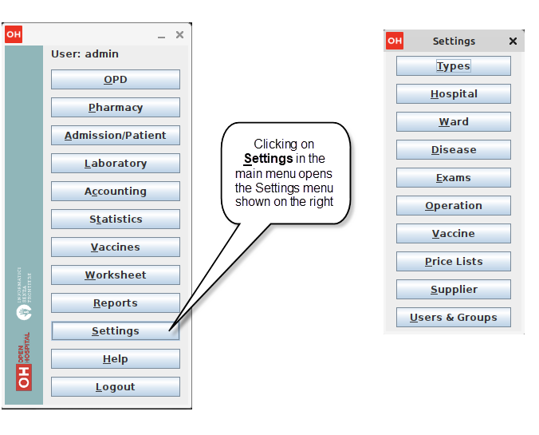
Some menu items lead directly to a specific function of the application (see the following example with the OPD Out Patient Department window):
3 Outpatient Department Management (OPD)
3.1 Main Characteristics
The function of the Out Patient Department (OPD) allows the recording of ambulatory patient visits, searching, reviewing, editing, and eventually deleting visits. In addition queries necessary for statistical purposes are available.
Click on the OPD button or press Alt + O in the main menu to access the OPD function.
3.2 Functions of Out Patient Department
All functions available under OPD are accessible from the window OPD Out Patient Department shown below:
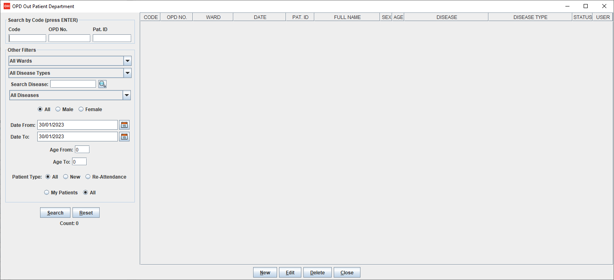
The following functions are available from the Buttons panel of the window OPD Out Patient Department:
-
New: create a new patient visit.
-
Edit: modify an existing patient visit.
-
Delete: delete a patient visit.
-
Close: exit from the OPD Out Patient Department function.
Furthermore, a search function (Search) is available using the Selection panel on the left side of the window.
3.2.1 Search Patient Visits (Search)
Queries about ambulatory patient visits can be done using the search criteria available on the Selection panel area of the window (on the left side of the window).
The following fields are available to select or narrow the resulting matches:
-
Ward: Select a specific OPD ward
-
Disease type: Select a specific disease type or all disease types
-
Disease: select a specific disease, or all diseases, or searching for partial matches by typing some letters in the search field
-
Date: Date From and Date To to select all visits occurring during the specified period
-
Age: Age From and Age To to select patients by age
-
Sex: Select patients by sex: All / Male / Female
-
Type of patient: Select visits by type of attendance: All / New / Re-Attendance
After specifying the selection criteria, press the Search button. The counter at the bottom of the window indicates how many visits match the specified criteria and the individual visit data is shown in the Data table area.
The example below shows all the visits for patients with asthma disease admitted in the period from 29-5-2020 until 5-6-2021; all ages, all sexes, and all patient types are included.
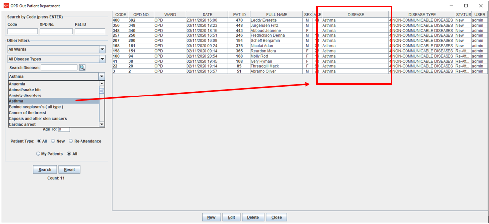
3.2.2 Create a New Patient Visit (New)
Press the New button in the OPD Out Patient Department window to access the New OPD Registration window shown below.
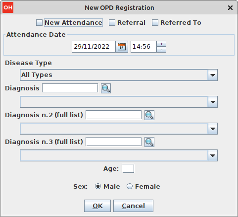
To record a visit, enter data into the following fields:
-
Type of attendance: This field is not meant to distinguish whether an individual is new or not in the ambulatory (that is, whether this is the absolute first time they have entered the ambulatory). The NEW ATTENDANCE selection indicates whether the patient comes to the ambulatory to report a new health issue or new disease for which no care has been previously addressed or recorded. This could be their initial visit or their n-th time in the ambulatory, it does not matter with regards to this field. If this visit is for an issue or disease previously addressed the field is not selected and records are created for the patient with regards to the follow-up care and instructions for recovery.
Example: A patient comes to the ambulatory because they report a cut; this event is recorded as NEW ATTENDANCE and the doctor sutures the wound and invites the patient to come back ten days later; when the same patient comes back after ten days to have his/her stitches removed, a new OPD record is then created but without the NEW ATTENDANCE flag set. -
Admittance Date: The date on which the patient is seen for the recorded activity.
-
Disease Type: By selecting a Disease Type, the first diagnosis list will contain only related diseases. The second and third list continues to contain all diseases.
| Disease Types are defined by the Administrator. Ask the Administrator or check the Settings chapter._ |
-
Diagnosis: A maximum of three diseases can be diagnosed per each attendance (new attendance or re-attendance does not matter in this context). Normally the patient reports at least one visit reason but it may happen that during the same visit the doctor finds other concurrent pathologies thus it is possible to record up to a maximum of three (the first being the only one mandatory) diagnoses.
It is possible to use filters to find diseases more easily. To do so, enter a text fragment in the search field that is part of the disease name. The closer the search text comes to the name of the disease being searched, the more precise the search is.
Example: In the OPD Out Patient Department window only the first diagnosis and its type are shown, but all the corresponding data is stored and available in reports and for searching. -
Age: The patient’s age; the valid age range is 0-200.
-
Sex: The patient’s sex; either male or female.
When finished entering data, the Buttons panel has the following choices:
-
OK: confirm and record the patient’s visit.
-
Cancel: close the window and return to the OPD Out Patient Department window.
3.2.3 Modify a Recorded Patient Visit (Edit)
In order to modify a visit, first highlight it in the OPD Out Patient Department window. Once highlighted, press the Edit button. When the Edit OPD Registration window is shown, all the data can be changed or modified.
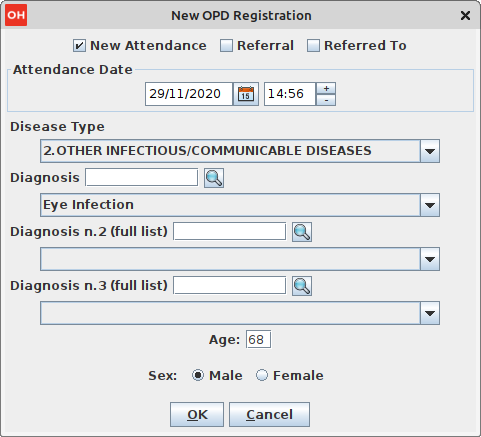
Once the data have been inserted, the Buttons panel shows the following choices:
-
OK: confirm new values (all the previous values will be lost).
-
Cancel: close the window and return to the OPD Out Patient Department window without applying any changes.
3.2.4 Delete a Recorded Patient Visit (Delete)
In order to delete a visit, first highlight it in the OPD Out Patient Department window. Once highlighted, press the Delete button. The highlighted record is shown in a confirmation dialog: now the record can be deleted. Deleted records are no longer available.
The Buttons panel shows the following choices:
-
Yes: confirm the deletion of the visit.
-
No: close the window and return to the OPD Out Patient Department window without deleting the visit.
3.3 OPD Extended
The OPD functionality can be extended by changing the OPDEXTENDED flag in the configuration file. Ask the Administrator or refer to the Administrators Guide .
3.3.1 Additional Features
Press the New button in the OPD Out Patient Department window to access the New OPD Registration window shown below.
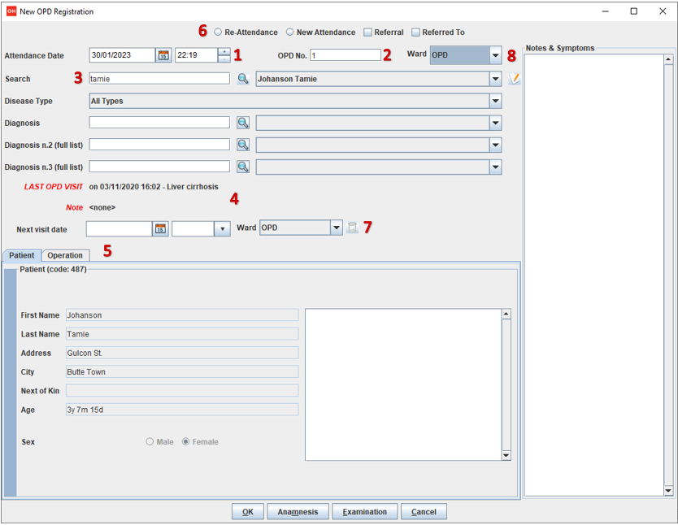
The OPD Extended module affords the following additional features:
-
Calendar to choose the visit date (1);
-
the OPD number now is visible (2): it is the progressive number per year automatically set by the system, changes to the value can be made only at the first registration in a year, then it will be increased automatically at each registration. The OPD number MUST be unique for each year.
-
Registered Patient (3): before choosing a disease, first select a patient from the drop-down list (this is required); to find a patient use the search field nearby by typing part of the patient’s name or code; this improves the reliability of reports and statistics, and therefore is a service to the patient by knowing his/her history.
-
Once the patient is selected and a previous OPD visit is found, special fields are populated with the most recent visit of the patient (4), his/her personal data (5), and the Re-Attendance checkbox will be selected automatically upon selection of the main (first) disease (6);
-
It is now possible to set the next appointment date (7) and in what ward (OPD or IPD). This automatically schedules a visit visible in Therapy Management and Worksheet.
-
The selection of the the OPD ward (8) is required so as to specify where the visit is taking place. After the first selection in a session, the application remembers the selection to ease the data entry.
-
If a new attendance for this patient is required, click the "New Admittance" (6) check box and proceed normally.
-
If editing an old OPD it is possible to change everything except the patient, which the OPD refers to, and the "New Admittance" check box.
-
In the case the selected patient personal data need to be updated, it is possible to click on the Edit icon near his/her name; a new window shows the patient personal information ready for modification.
-
In the case the patient is not yet registered, the <new patient> entry can be selected to register a new patient; after registration, the program returns to the OPD window and the new patient is selected.
-
If the user is enabled by the Administrator (see Users & Groups) the following is shown:
-
the Examination button function (see Patient examination)
-
the Operation tab after the patient’s tab (5) to record small surgeries and other interventions (see Operations) as well as in Admission (see Insert or Modify Surgery Data).
-
| For OPD and IPD wards see Ward settings. |
4 Pharmacy (Pharmacy)
Pressing Pharmacy from the main menu provides access to the Pharmacy menu. From the Pharmacy menu, the following functions are available: Pharmaceuticals and Pharmaceuticals Stock, Pharmaceuticals Stock Ward.
|
| Pharmaceuticals Stock Ward functionality can be disabled by changing the INTERNALPHARMACIES flag in the configuration file. Ask the Administrator or refer to the Administrators Guide. |
4.1 Pharmaceuticals (Pharmaceuticals)
4.1.1 Main Characteristics
Pharmaceutical functions allow for the insertion, modification, and deletion of pharmaceuticals. Moreover, it provides important information about pharmaceuticals:
-
the current quantity lying in the stock
-
the limit quantity that defines when a pharmaceutical is going out of stock
-
if the pharmaceutical is out of stock
-
the expiring drugs today or a within a specified time period
| In Open Hospital to identify pharmaceuticals sometimes the word, pharmaceutical is used and sometimes the synonym medical is used. |
4.1.2 Functions of Pharmaceuticals
To access the functions of Pharmaceuticals, press Pharmaceuticals in the Pharmacy menu.
All functions available under Pharmaceuticals are accessible from the Pharmaceutical Browser window shown below. It displays all the pharmaceuticals available in the hospital.
If the pharmaceutical quantity is under the critical level it is shown in RED.
If the pharmaceutical quantity is zero it is shown in GRAY and the square in the last column is checked.
The following functions are accessible from the Buttons panel of the Pharmaceutical Browser window:
-
New: register a new pharmaceutical.
-
Edit: modify a registered pharmaceutical.
-
Delete: delete a pharmaceutical.
-
Export: export the pharmaceuticals to a CSV file (Excel).
-
Stock: show the report of stock quantities.
-
StockCard: show the history of the movement of a certain pharmaceutical (must be selected in the list first).
-
Order: show the list of pharmaceuticals that have to be ordered.
-
Expiring: show the list of pharmaceuticals that are going to expire (today, next month, within two months, within three months, or within another month to be specified).
-
AMC: show the AMC (average monthly consumption) of pharmaceuticals.
-
Close: exit from the Pharmaceuticals Browser.
At the bottom left of the window, there is a "Select type" combo box. Based on the value selected, the table either displays a pharmaceutical of a specific type or all pharmaceuticals if the default value of ALL is used. Just to the right of the combo box is a field that is used to search for a specific pharmaceutical by description by typing a keyword into the field.
It is possible to sort the table by any of the column headers by double-clicking on the column name. Filtered type (combo box), searched keys (the search field) and sorting are all reflected in the STOCK report.
4.1.2.1 Insert a New Pharmaceutical (New)
Press the New button in the Pharmaceutical Browser window to access the New Medical window shown below.
To insert a new pharmaceutical, enter the following fields:
-
Type: for example, Drugs or Chemical
-
Code: code that uniquely identifies the pharmaceutical for fast searching.
-
Description: the description of the pharmaceutical.
-
Pieces per Packet: number of pieces per packet (if more than 1).
-
Critical level: the minimum quantity required in stock.
| Types can be defined by the Administrator. Check the Settings chapter for more information. |
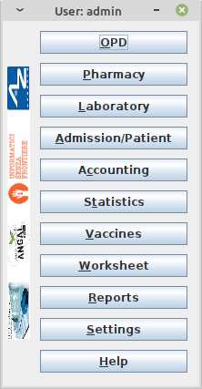
When all the data is entered, the Buttons panel has the following choices:
-
OK: confirm and save the data.
-
Cancel: close the window and return to the Pharmaceutical Browser window.
4.1.2.2 Modify an Existing Pharmaceutical (Edit)
After selecting the pharmaceutical to modify, press the Edit button in the Pharmaceutical Browser window to access the Edit Medical window shown below. All the data except for the Type value can be modified or changed.
When all the data is entered, the Buttons panel has the following choices:
-
OK: confirm and save the data.
-
Cancel: close the window and return to the Pharmaceutical Browser window.
4.1.2.3 Delete a Pharmaceutical (Delete)
To delete a pharmaceutical, highlight it in the Browser window as before. Next, press the Delete button and a confirmation dialog is shown:
The Buttons panel has the following choices:
-
Yes: confirm the deletion of the pharmaceutical.
-
No: close the window and return to the Pharmaceutical Browser window.
4.1.2.4 Export the List of Pharmaceuticals (Export)
Use this function to export the list of pharmaceuticals shown in the Pharmaceutical Browser window that then can be imported into Excel.
Press the Export button in the Pharmaceutical Browser window to access the Save window shown below. The window uses the language of the computer, regardless of the language used in Open Hospital.
This begins the exporting of the list of pharmaceuticals.
In the Save window:
-
select the directory of the file system where the data is to be stored
-
input the name for the file (Filename)
4.1.2.5 Stock Report (Stock)
Press the Stock button in the Pharmaceutical Browser window to produce the report of pharmaceuticals in the stock grouped by IN STOCK and OUT OF STOCK.
4.1.2.6 StockCard (StockCard)
Press the StockCard button in the Pharmaceutical Browser window to show the history of movement for a selected pharmaceutical for a specific time range. The data can either be in report format or exported to a CSV file.
4.1.2.7 Order of Pharmaceuticals (Order)
Press the Order button in the Pharmaceutical Browser window to produce the list of pharmaceuticals remaining in stock and the ones to be reordered according to their critical level.
4.1.2.8 Expiring Pharmaceuticals (Expiring)
Press the Expiring button in the Pharmaceutical Browser window to produce the list of pharmaceuticals that are going to expire grouped by type and lot.
4.1.2.9 Average Monthly Consumption (AMC)
Press the AMC button in the Pharmaceutical Browser window to produce a report showing the average monthly consumption of pharmaceuticals.
4.2 Pharmaceutical Stock (Pharmaceutical Stock)
4.2.1 Main Characteristics
The Pharmaceutical Stock feature is used to store and trace every stock movement that has been made. Every movement is identified by the following data:
-
date of the movement
-
type of the movement, that is, if it is a charging or discharging one
-
the ward that the movement refers to. This feature is needed for discharging movements only. It is important to know in which ward pharmaceuticals have been used, otherwise, this field is empty
-
the quantity
-
the pharmaceutical (which in turn relates to different categories: Laboratory, Surgery, Drugs or Chemical)
-
the lot to which the movement is referred to. Some pharmaceuticals may not have a lot related (for example Gloves), so the field can be omitted. It is recommended to store even the lot (if it exists) because every lot has its own peculiarity:
-
a name (that can be its code)
-
a preparation date
-
a due date
In this way, which movement that refers to the pharmaceuticals expiring can be found, or pharmaceuticals prepared on a specific date, or how many movements have been registered about that lot, and so on.
-
-
the supplier of the pharmaceutical. This characteristic is needed for charging movements only. This field is empty in other cases.
4.2.2 Functions of Pharmaceuticals Stock
To access the functions of Pharmaceuticals, press Pharmaceutical Stock in the Pharmacy menu shown below.

The Stock Movement Browser window shown below is opened.
The following functions are available from the Buttons panel of the window Stock Movement Browser:
-
Charge: record a new charge movement.
-
Discharge: record a new discharge movement.
-
Export to Excel: export pharmaceuticals stock movements.
-
StockCard: show the history of movement for a certain pharmaceutical (can be directly selected by the list otherwise will be requested).
-
Stock Ledger: show the history of movement for all pharmaceuticals within a selected date range.
-
Close: exit the Stock Movement Browser window.
| There is no Delete button as movements cannot be deleted. If a mistake does occur, for example, the wrong quantity of a pharmaceutical is inserted in charge then use a new opposite movement to correct the mistake. In this example use a discharge movement to undo the unwanted change. |
Furthermore, a search function (Filter) is available using the Selection panel on the left of the window.
4.2.2.1 Search Pharmaceuticals Stock Movements (Filter)
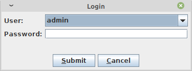
Using the Stock Movement Browser search function, the information in the window can be filtered to show:
-
how many boxes of pharmaceutical remains in the stock
-
which movements have been made on a specific day
-
in which ward a specific pharmaceutical has been discharged
-
if there are any pharmaceutical expired
Queries about movements of pharmaceuticals can be done using the search criteria available on the Selection panel area of the Stock Movement Browser window (left side of the browser). The search results are shown in the Data table area.
The Selection panel is used to select a group of movements according to specific filters. The filter is set using the tools contained in the Selection panel.
Filters refer to three different objects: the Pharmaceutical, the Movement, and the Lot Preparation and Lot Due Date.
For a Pharmaceutical, choose either its:
-
Description, the pharmaceutical’s name
-
Type: Laboratory, Surgery, Chemical, and Drugs, etc.
To avoid conflicting filters, only one of the options is available at any one time. So, when the description combo box is active, the other one is not, and vice versa.
To quickly find a medical simply type a keyword that is a part of the medical’s name into the text field at the top of the pharmaceuticals products combo box and press the search button () that follows this text field.
For a Movement, choose either its:
-
Type: specifies if it is a charge or a discharge type. If the discharge option is selected, then the ward combo box is enabled. The ward combo box allows finding any discharging movements that refer to a specific ward.
-
Date: specifies the data range for the search, between the Date From and Date To values. The date tools consist of three blank areas, which (from left to right) refer to day, month and year. As a value is inserted into a blank area, moving to the next area is accomplished by using the Tab key on the keyboard. When the window is shown the date range is set to the previous week by default.
Finally, for Lot Preparation Date and Lot Due Date movements that refer to specific lots can be found by inserting:
-
the lot preparation date: a valid time span (between Preparation Date From and Preparation Date To)
-
the due date; behaves similar to the lot preparation tool and the movement date tool
Each filter can be combined with another, allowing for many possibilities.
After the filtering criteria are chosen, press the Filter button and the matching data is shown in the Data table area.
4.2.2.2 Insert Stock Charging Movement (Charge)
To insert charging movements, press Charge in the Stock Movement Browser window. The Stock Movement window is shown:

It is possible to perform more than one charging movement at a time. The window is composed of two areas: a Panel and a Grid.
The Panel contains the following fields:
-
Date: the date of the movement
-
Charge Type: the charge type
-
Supplier: the origin of the pharmaceutical
-
Reference No.: the reference of the operation
The Grid is filled with the pharmaceuticals involved in the charging movement. To fill the grid, use the field above the grid to select a pharmaceutical. Enter into the field the code or the description of the pharmaceutical to move, and press ENTER. This will open the Choose a Medical window.

Select the desired medical and click Yes. This will open a new window where the quantity of the medical is specified:

Then press OK. If there is an existing lot in the system, the Existing Lot window is shown:
If stock movement is related to this existing lot, select it and click Selected Lot. Otherwise, click New Lot and the Lot Information window is shown with the following fields:
-
Lot No.: The lot code
-
Lot preparation: The lot preparation date
-
Expiring: The lot expiring date
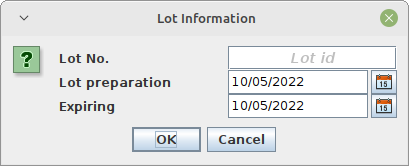
Enter the appropriate values and then press the OK button. The Input window is shown, where the unit cost is specified:
Then click OK to insert the medical information as a line in the grid.
Finally, click the Save button to save the charge movement.
| The Lot definition can be set as automatic by changing the AUTOMATICLOT_IN flag in the configuration file, so every new charging movement automatically creates a new lot. Regardless of the setting, the Expiring Date must always be provided. Ask the Administrator or refer to the Administrators Guide. |
| In order to avoid managing the cost of medicals set the LOTWITHCOST flag to no in the configuration file. Ask the Administrator or refer to the Administrators Guide. |
4.2.2.3 Insert Stock Discharging Movement (Discharge)
To insert discharging movements, press the Discharge button in the Stock Movement Browser window. The Stock Movement window is shown:
It is possible to perform more than one discharging movement at a time. The window is composed of two areas: a Panel and a Grid.
The Panel contains the following fields:
-
Date: the date of the movement
-
Discharge Type: the discharge type
-
Destination: the ward where the discharged medical will be affected
-
Reference No.: the reference number of the operation
The Grid is filled in with pharmaceuticals involved in the discharging movement. To fill the grid, enter into the field above the grid the description of the pharmaceutical to discharge, and press ENTER. This opens the Choose a Medical window.
Select the desired medical and click Yes. This then opens the Quantity window showing the existing stock for the medical. In the input field enter the quantity of the medical to discharge.
Then press OK. The Lot Information window is shown:
Select the existing lot and click OK to insert the medical discharge into the grid.
Click the Save button to save the discharge movement.
| The Lot definition can be set as automatic by changing the flag AUTOMATICLOT_OUT in the configuration file, so every new discharging movement will automatically select a suitable lot for the operation according to the expiring date. If the first selected lot does not contain enough quantity to serve the discharging movement, several discharging movements may be generated. Ask the Administrator or check the Administrators Guide for more information. |
4.3 Pharmaceuticals Stock Ward (Pharmaceuticals Stock Ward)
4.3.1 Main Characteristics
The Pharmaceutical Stock Ward feature allows the management of the pharmacy at the ward level.
Pharmaceuticals Stock Ward functionality can be enabled or disabled by changing the INTERNALPHARMACIES flag in the configuration file. Ask the Administrator or refer to the Administrators Guide.
4.3.2 Functions of Pharmaceuticals Stock Ward
To access the functions of Pharmaceuticals, press Pharmaceutical Stock Ward on the Pharmacy menu shown below.
The window Ward Pharmacy shown below will be opened. All functions available under Pharmaceutical Stock are accessible from the Ward Pharmacy window selecting one WARD on the top left of the window.
After the selection of the ward (FEMALE WARD in this example), the Ward Pharmacy window is shown, allowing for the management of the ward pharmacy of the FEMALE WARD:
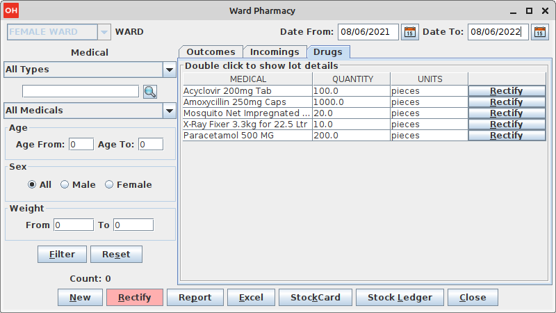
The available functions are:
-
New: create a new discharging movement for the patient.
-
Rectify: rectify the quantity lying in stock (see 6.3.2.1 Rectify).
-
Report: print the ward medical inventory report.
-
Excel: export the data in a format to import into Excel.
-
StockCard: show the history of movement for a certain pharmaceutical (can be directly selected by the list otherwise will be requested).
-
Stock Ledger: show the history of movement for all pharmaceuticals within a selected date range.
-
Close: exit from the Ward Pharmacy window.
Different than the Pharmaceuticals Stock functionality, the Pharmaceutical Stock Ward allows only discharging movement to patients since it is an internal management of pharmaceuticals held in the ward after they have been charged by the main pharmacy. It is also possible that the discharging movement from ward to ward can be accomplished.
The Ward Pharmacy window shows a Filter panel on the left, a Movements panel in the right-center, and a Button panel at the bottom.
4.3.2.1 Rectify (Rectify)
It is possible to rectify the quantity held in stock in the Ward Pharmacy. This may be necessary when a drug is damaged or stolen. To do this, click the Rectify button to open the Rectify window.
-
Select the medical. Once done, the quantity currently in stock is displayed.
-
If lots exist for the drug, click Choose a Lot, otherwise, click on New Lot (new lot creation).
-
Modify the Actual Quantity.
-
Enter the reason for the rectification.
Click OK to save the rectification or Cancel to abort the change.
4.3.2.2 Search Ward Pharmacy Movements (Filter)
The Filter panel allows the filtering of registered movements by:
-
Medical
-
Age
-
Sex
-
Weight
The counter at the bottom automatically displays the number of movements that match the filtering criteria after clicking the Filter button.
The Reset button resets all the values in the Filter panel back to their default values as shown in the figure above.
4.3.2.3 The Movements Panel
The Movements panel is made up of three tabs:
-
Outcomes: shows all the movements registered between the dates in the From and To fields at the top of the window. By default, From and To dates are set to the current date. Every movement is identified by the following fields:
-
Date: the date of the movement.
-
Patient: the patient the movement is related to, their age, sex, and weight (ND if the weight has not been defined at the registration moment).
-
Medical: the drug subject of the movement.
-
Quantity: the quantity subject of the movement.
-
-
Incomings: shows all incomings from the main pharmacy, it is to say, all discharging movements registered in the Pharmaceutical Stock window related to the selected ward.
-
Drugs: the number of drugs remaining in the selected ward as a result of all incoming minus all the outgoings.
4.3.2.4 Inserting a New Ward Pharmacy Movement (New)
To insert ward pharmacy movements, press the New button in the Ward Pharmacy window. The New / Edit window is shown:
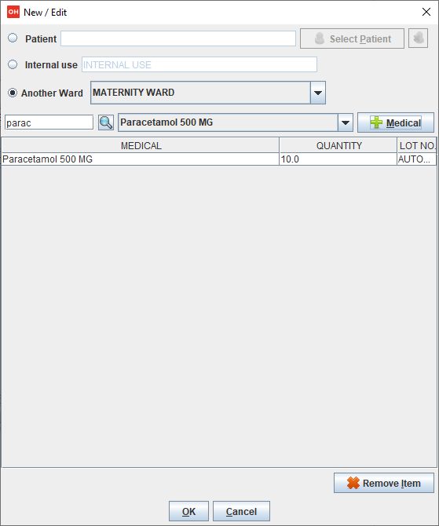
As mentioned previously, only discharging movements are allowed in this functionality. So, the information required is the following:
-
Patient or Internal use or Another Ward: a registered patient can be selected by clicking on the Pick Patient button so the movement is associated with his/her ID or select Internal use and type a description to specify that the movement is not related to a patient. Selecting Another Ward allows for choosing the destination ward from the list provided.
-
Medical: first select the drug to give to that patient (the only ones that are in the ward as a result of a previous discharging movement in the Pharmaceutical Stock Browser) from the dropdown list and then press the Medical button. It is possible to specify the quantity (multiple and half-piece are allowed) in the window shown:
If AUTOMATICLOTWARD_TOWARD has been enabled the user will be requested to select a lot (similar to Insert Stock Discharging Movement).
| The lot selection can be enabled or disabled (set as automatic) by changing the flag AUTOMATICLOTWARD_TOWARD in the configuration file, so every new discharging movement will automatically select a suitable lot for the operation according to the expiring date (FEFO). If the first selected lot does not contain enough quantity to serve the discharging movement, several discharging movements may be generated if the quantity laying in other lots can satisfy the request. Ask the Administrator or check the Administrators Guide for more information. |
Before pressing the OK button, insert as many Medicals as needed, it will show a corresponding number of movements in the Outcomes tab of the Movement panel in the Ward Pharmacy window. These movements are also visible in the Incomings tab of the Movement panel in the Ward Pharmacy window of the receiving ward, in case of discharging to another ward.
5 Laboratory (Laboratory)
5.1 Main Characteristics
The Laboratory features are used to manage the laboratory exams.
It is possible to create, modify or delete exams.
-
Insert a new laboratory exam
-
Delete (or edit) an existing exam
-
Select some exams with the Search button (select the exams name and the range of dates for the exam)
5.2 Functions of Laboratory
To access the Laboratorys functions press Laboratory on the main menu of Open Hospital. The Laboratory Browser window is shown:
All functions available under Laboratory are accessible from the Laboratory Browser window shown below. By default, the system shows all the laboratory exams record in the last week.

Data that identify laboratory exams are the following:
-
Date: indicates the date and time when the exam was entered
-
Exam: the description of the exam
-
Result: the result of the exam
To access the other functions of the laboratory in the Buttons panel the following choices are available:
-
New: enter a new laboratory exam.
-
Edit: modify an existing laboratory exam.
-
Delete: delete an existing laboratory exam.
-
Print Table: print the list of laboratory exams shown in the table.
-
Print Label: print the labels of the samples for laboratory exams.
-
Close: close the window and return to the main menu.
Furthermore, a search function (Search) is available using the Selection panel on the left of the window.
5.2.1 Search Laboratory Exams (Search)
The search function allows for selecting and showing laboratory exams on the Data table of the Laboratory Browser window.
In the example below, all types of exams executed on the date 21.11.2020 are shown in the Data table.
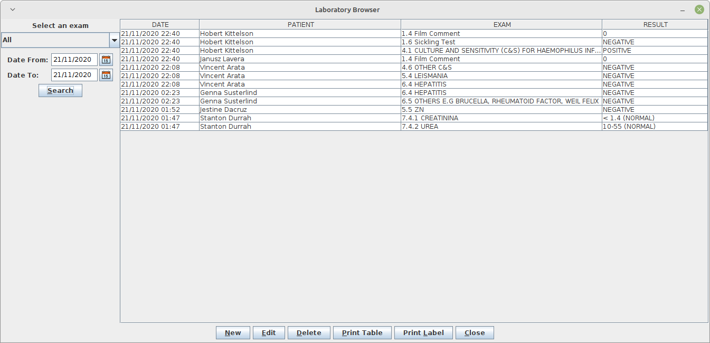
Data about exams can be selected by choosing specific fields among the following:
-
Select an exam: Valid values are:
-
All: exams of all types are shown
-
Pick a single exam from the list; only exams of the selected type are shown
-
-
Date: Date From and Date To only shows the exams executed within the requested time period
After the selection press, the Search button; the system shows in the table results of the search applying the criteria requested.
5.2.2 Create a New Laboratory Exam (New)
Press the New button in the Laboratory Browser window: The New Laboratory Exam window is shown:
To record the visit, enter the following fields:
-
Date: the date of the exam, the application defaults to the current date.
-
Material: choose from the available values the material used in the exam.
-
Exam: choose the exam.
-
Patient In: it activates itself if the selected patient is currently admitted, it is possible to change it if needed.
-
Select a patient: select the patient that is examined. The field is not mandatory as the patient’s data be input into the following fields.
-
Name: the first and last name of the patient (automatically filled if a patient is selected).
-
Age: the age of the patient (range 0-200) (automatically filled if a patient is selected).
-
Sex: the value M for male or the value F for female (automatically filled if a patient is selected).
-
Note: a free-form area for notes and/or description.
-
Result: based on the exam chosen the panel is populated with all available results for selection.
5.2.2.1 Results
In Open Hospital there are two kinds of possible results for each exam:
-
Single Result: selection of a single result from a list (Procedure 1)
-
Multiple Results: selection of many results from a list of positive/negative values (Procedure 2)
-
Or manually inputting the precise result (Procedure 3)
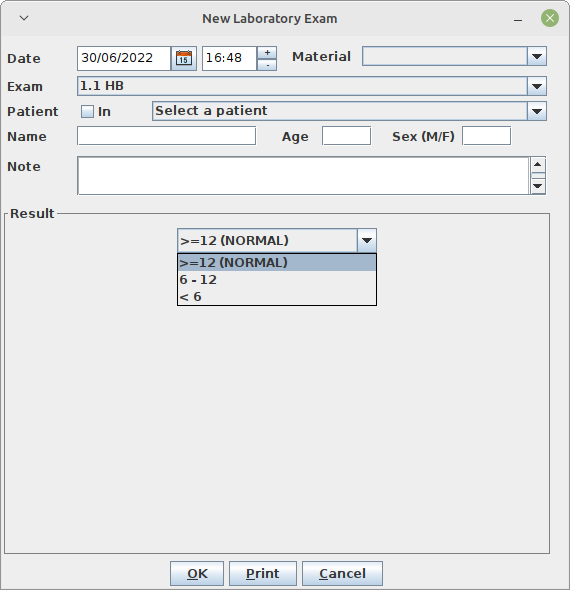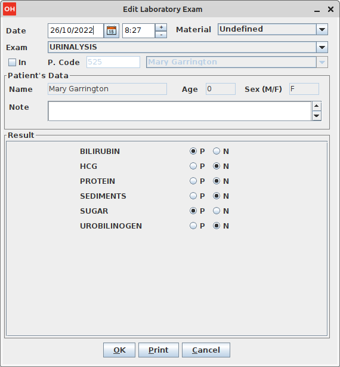
| Exams, Exam Type, and Results can be defined by the Administrator. Ask the Administrator or check the Settings chapter. |
When the data is specified, the Buttons panel provides the following choices:
-
OK: confirm and record the data.
-
Print: print the result.
-
Cancel: close the window and return to the Laboratory Browser window.
5.2.3 Modify a Laboratory Exam (Edit)
To modify an exam, highlight the exam in the Laboratory Browser window. Once highlighted, press the Edit button to enter the Edit Laboratory Exam window shown below. Now the record is available for changes. This function allows for editing all the data for the exam including setting the result of the exam.
5.2.4 Delete Laboratory Exam (Delete)
To delete an exam, highlight the exam in the Laboratory Browser window. Once highlighted, press the Delete button, and a confirmation window is shown:
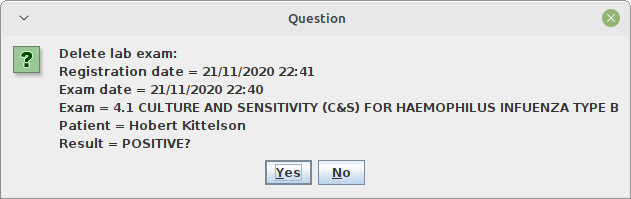
5.3 Laboratory Extended
The Laboratory functionality can be extended by changing the LABEXTENDED flag in the configuration file. Ask the Administrator or refer to the Administrator’s Guide.
5.3.1 Extended Laboratory Browsing
If the extended Laboratory functionality is enabled, the Laboratory Browser window shows a new column containing the name of the patient.
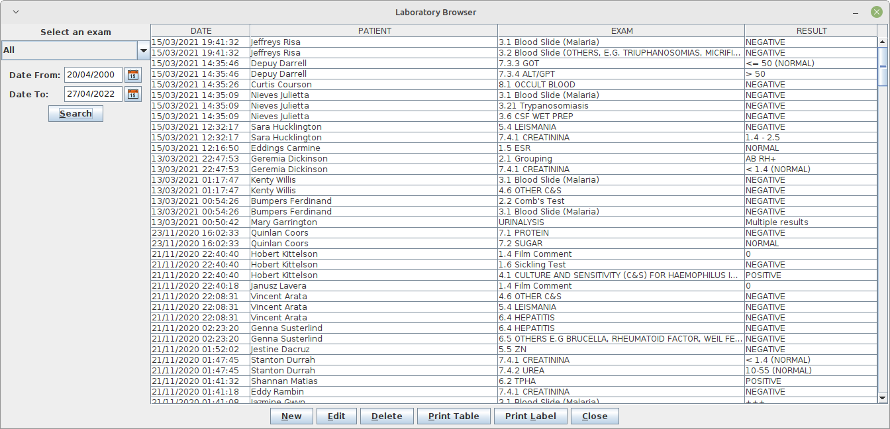
The presence of the patient name column is required by this mode.
5.3.2 New Laboratory Exam (New)
The New Laboratory Exam window is now strictly related to the patient, that is to say, that the exam must be assigned to a patient previously registered in the system.
Before closing the window with the exam result a patient must be selected from the list; the fields in the Patient’s Data panel provide some simple patient details.
A search field can be used to find a patient by typing part of his/her name or his/her Open Hospital code (which is specified in the Patient window, see Patient Extended).
The New Laboratory Exam window is shown:
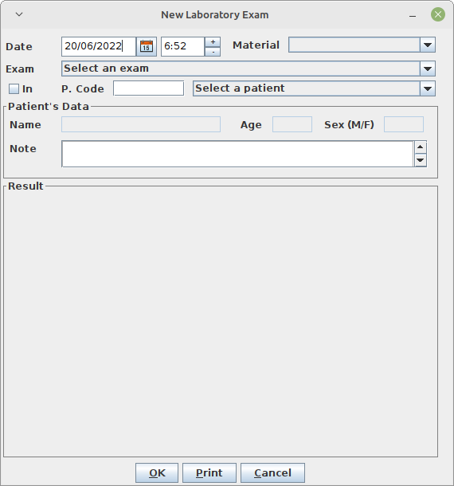
The Patients Data panel cannot be modified except for the Note field and only shows the information related to the selected patient.
5.3.3 Laboratory Multiple Insert
The New Laboratory functionality can be extended by changing the LABMULTIPLEINSERT flag in the configuration file. The flag LABEXTENDED has to be enabled too. Refer to the Administration’s Guide.
The New Laboratory Multiple allows multiple exam insertion for each patient, avoiding repeating the new laboratory exam procedure (New) for every exam for the same patient.
5.3.3.1 New Patient Exams (New)
Press the New button in the Laboratory Browser window: The New Patient Exams window is shown (including sample exam data):

To record the visit, enter the following fields:
-
Date: the date of the exam, the application defaults to the current date.
-
Patient: select a patient by pressing the Find Patient button.
-
OPD/IPD: the window automatically checks if the patient is admitted or not in the hospital; the value can be changed if needed.
-
Exam: choose the exam; a first window asks for the material, then a second window asks for the exam, finally a third window asks for the result if the exam allows only a single result, otherwise the list of multiple results are shown in the right panel, together with the chosen material.
-
Remove: remove a selected exam.
-
Note: additional exam reporting (different for each exam).
| At any time, before pressing OK, modifications can be made to every exam by clicking on it in the list and changing material, results, or notes in the related panels. |
6 Accounting (Accounting)
6.1 Main Characteristics
Accounting is the function that is used to manage the billing process where bills for pharmaceuticals, operations, exams, and other costs of a patient are created and managed. Currently, the billing process is not linked with other functions of Open Hospital and therefore the application does not generate the accompanying billing information based on the therapy followed by the patient: the billing information must be input for all items manually.
In addition, the accounting function supports the management of bill payments (total or partial) and the generation of reports.
|
6.2 Functions of Accounting
All functions available under Accounting are accessible from the Patients Bills Management window shown below. To access the Patient Bills Management window press Bill Manager on the Accounting menu.
By default, the window shows in the Data table all the bills for today (current day).
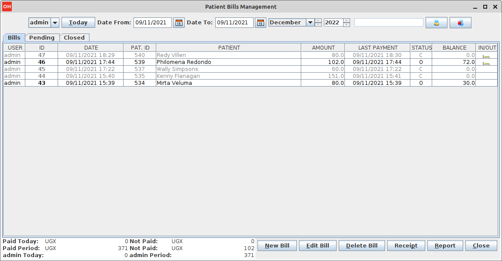
For each bill the following data are shown in the Data table:
-
ID: the number of the bill (created automatically by the application).
-
Date: the date and time of the bill creation.
-
Pat ID: the patient’s ID (created automatically by the application at the registration time).
-
Patient: the patient’s name.
-
Amount: the total amount of the bill.
-
Last payment: the date and time of the last payment.
-
Status: the status of the bill; values are: O (open) if not fully paid; C (closed) if fully paid.
-
Balance: the bill amount which has not yet been paid.
-
IN/OUT: the bill refers to an admission or OPD
The following functions are accessible from the Buttons panel of the Patient Bills Management window:
-
Today: (button on top of the window) shows in the Data table only the bills for the current day.
-
New Bill: insert a new bill.
-
Edit Bill: modify a stored bill if its status is O (Open).
-
Delete Bill: delete a stored bill (does not remove the bill but changes the status to D).
-
Receipt: print a bill receipt.
-
Report: print a variety of reports.
-
Close: exit from Patients Bills Management and return to the main menu
Furthermore, the Patient Bills Management window shows an Incomes Table with the following information:
-
First Row: the PAID and UNPAID amounts (in the specified currency) for Today
-
Second Row: the PAID and UNPAID amounts (in the specified currency) for the visualized Period
6.2.1 Insert a New Bill (New Bill)
The New Bill function is used to to generate a new bill for a patient. Press the New Bill button in the Patients Bills Management window to access the New Patient Bill window shown below.
To record a new bill it must be saved with the Save function (see description below).
Before describing the function of the New Patient Bill window the components of the window are described.
The New Patient Bill window is composed of four areas: the Bill panel at the top, the Item panel in the center, the Payments panel at the bottom, and the Buttons panel on the right.
Bills are composed of items. A billing item is a cost related to either a pharmaceutical, an operation, an exam, or other/custom costs.
Data shown in the Bill panel area are:
-
Date: the date and time of the bill.
-
Patient: the patient associated with the bill.
-
List: the Price List that will be used for this bill
NOTE: Price Lists can be defined by the Administrator. Ask the Administrator or check the Settings chapter.
Data shown in the Item Panel area are:
-
ITEM, QTY, AMOUNT: the descriptions of the bill entry, the selected quantity, and the amount; the amount is calculated as the unit cost of the item multiplied by the quantity;
-
TOTAL: the total amount of the bill
NOTE: Prices, or unit costs, can be defined by the Administrator. Ask the Administrator or check the Settings chapter.
Data shown in the Payments panel area are:
-
Date: the date and time of the payment.
-
Amount: the amount of the payment.
-
BALANCE: the remaining amount to be paid (the difference between the Total (*) and the sum of the payments).
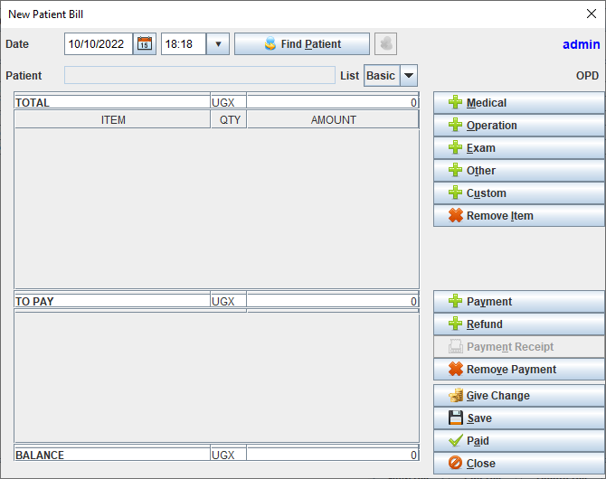
To insert a new bill Date field value is required. The application defaults to the current date and time but the values can be modified.
In addition, a patient must be selected. To do that, press the Find Patient button on top of the screen. The Patient Selection window is shown:
Once the patient is selected start entering the data related to the bill.
| A patient can have several pending bills only if the parameter ALLOWMULTIPLEOPENEDBILL is enabled (see the Administrator Manual). Otherwise, if the patient has a pending bill, the bill will be recalled to edit it. A new bill cannot be started for a patient before closing the previous bill. |
There are several types of bill categories (or types) identified by the buttons in the Buttons panel on the right of the window:
-
Medical: enter bill entries for pharmaceuticals.
-
Operation: enter bill entries for operations.
-
Exam: enter bill entries for exams.
-
Other: enter other prices defined in the Price List.
-
Custom: enter custom items defined on the fly.
| Types can be defined by the Administrator. Ask the Administrator or check the Settings chapter. |
6.2.1.1 Insert a Bill Entry Related to Medicals, Operations or Exams (Medical, Operation, Exam)
We show here how to insert a bill entry for pharmaceutical (Medical); the function to insert a bill entry for operation (Operation) and exam (Exam) is the same with the only difference that for the last two is not required the quantity (the quantity is always 1).
To insert a bill entry, press the Medical button. The Medical window is shown:
Using the mouse, highlight the required pharmaceutical (medical).
The Buttons panel of the Medical window has the following choices:
-
OK: select the highlighted pharmaceutical
-
Cancel: return to the New Patient Bill window without selecting any pharmaceutical
If OK is selected the Quantity window is shown, where the quantity of the pharmaceutical used by the patient can be entered:
The Buttons panel of the Quantity window has the following choices:
-
OK: select the highlighted pharmaceutical and return to the New Patient Bill window.
-
Cancel: return to the New Patient Bill window without selecting any pharmaceutical.
6.2.1.2 Insert a Bill Entry Related to Various Custom Reasons (Custom)
To insert a custom bill entry press the Custom button. The application will show the Custom Item window shown below.
In this window enter a description for the custom item (in the example below is Number of days of hospitalization).
The Buttons panel of the Custom Item window has the following choices:
-
OK: go to another Custom Item window (to enter the quantity, see below).
-
Cancel: return to the New Patient Bill window without inserting any custom bill entry.
In the Custom Item window enter the amount related to the bill entry (in the example above the 20 is in the local currency, i.e., it is in US dollars if the country is the USA).
The Buttons panel of the Custom Item window has the following choices:
-
OK: confirm the bill entry and return to the New Patient Bill window.
-
Cancel: return to the New Patient Bill window without inserting any bill entry.
6.2.1.3 Remove a Bill Entry of a Bill (Remove Item)
To remove a bill entry select the bill in the New Patient Bill window and then press the Remove Item button. The selected bill entry is removed. Bill entries can be removed before or after the final saving (see Save function described below).
6.2.1.4 Insert a Payment (Payment)
To insert a payment press the Payment button. The application shows the Quantity window shown below.
Provide the amount of the payment (in the example above is 12 in the local currency, i.e. it is US dollars if the country is the USA) in the text field.
The Buttons panel of the Quantity window has the following choices:
-
OK: confirm the payment and return to the New Patient Bill window.
-
Cancel: return to the New Patient Bill window without inserting any payment.
6.2.1.5 Insert a Refund (Refund)
Sometimes the cashier has to process a refund for the patient; in this case, press the Refund button and insert the amount of the refund. The amount is converted to a negative value and added to the payments list.
6.2.1.6 Payment Receipt (Payment Receipt)
A Payment receipt can be printed at any time given that at least one payment is made. Click the Payment Receipt button.
6.2.1.7 Remove a Payment (Remove Payment)
A payment can be removed by selected the payment in the New Patient Bill window and then pressing the Remove Payment button.
6.2.1.8 Give Change (Give Change)
Sometimes it could be useful to calculate the difference between the bill balance and the payment amount the patient is making when paying their bill. By pressing the Give Change button the amount the patient is paying must be specified and the program calculates the difference between the payment and the current bill balance. If the amount being paid is greater than the bill balance (i.e., they are overpaying) the amount of change to give to the patient is displayed.
6.2.1.9 Save Function (Save)
When all the data input for a bill is completed (bill or payments) press the Save button in the Buttons panel of the New Patient Bill window.
The application saves the bill and returns to the Patient Bills Management window; the status of the bill is O (Open) until it is PAID (Paid).
6.2.1.10 Paid Function (Paid)
If the patient is going to pay the complete amount of the bill press the Paid button. If the balance is not equal to zero the system automatically adds a payment in the payments list equal to the balance and sets the bill as C (Closed).
6.2.1.11 Print Receipt Function
A receipt can be printed at any time by pressing the Paid button. To enable this feature, the RECEIPTPRINTER flag in the configuration file must be set and a proper printer device must be connected to the system. Ask the Administrator or refer to the Administrators Guide.
6.2.1.12 Close Function (Close)
The close function allows for optionally exiting from the New Patient Bill window without saving changes. Press the Close button to access the close function. The confirmation window is shown:
6.2.2 Edit an Existing Bill (Edit Bill)
To modify an existing bill select the bill in the Patient Bills Management window and then press the Edit Bill button. The Edit Patient Bill window is shown:
| Only bills with a status of O (Open) can be modified by enabled users (See User & Groups), otherwise, an A4 report is shown. |
If the bill, at the time of creation, was related to an admitted patient, the related ward is shown in the upper right.
If the patient’s status has changed the application prompts for the next action:
Case 1)
If the answer selected is "Yes", the bill is updated and belongs to the "OPD" category (no admission).
If the answer selected is "No", the bill remains unchanged and continues to belong to the original admission.
Case 2)
If the answer selected is "Yes", the bill is updated and belongs to the current admission.
If the answer selected is "No", the bill is unchanged and is associated with the "OPD" category (no admission)
Case 3)
If the answer selected is "Yes", the bill is updated and belongs to the current admission.
If the answer selected is "No", the bill is unchanged and belongs to the original admission.
The relation of a bill with a patient admission is found in the last column in "Patient Bills Management" windows:
6.2.3 Delete a Bill (Delete Bill)
To delete an existing bill select the bill in the Patient Bills Management window and press the Delete Bill button. The Delete window is shown:

| Generally, this functionality is not allowed for regular users and should be performed only by the Administrator. |
6.2.4 Receipt (Receipt)
A bill receipt can be printed directly from the Patient Bills Management window. Highlight the bill and click the Receipt button. A proper printer device must be connected to the system.
6.2.5 Reports (Report)
The Open Hospital accounting module comes with a set of reports hereby listed:
-
Today (Closure): a report that shows the current user incomes
-
Today: a report that shows a statement with all paid and unpaid bills within today
-
Period: a report that shows a statement with all paid and unpaid bills within the period currently selected
-
This month: a report that shows a statement with all paid and unpaid bills within the current month
-
Other month: a report that shows a statement with all paid and unpaid bills within a specified month

For each report, except Today (Closure), one of the following options must be chosen:
-
Short Report (only BadDebts bills): a report that shows a statement with only the unpaid bills and the total for the others
-
Full Report (all bills): a report that shows a statement with all paid and unpaid bills
-
OH23A1-open bills list: a report that shows the list of opened bills (pending bills)

Once the choice has been made, after some time the JasperViewer will show the generated report as follows:

| By default, an internal PDF viewer is used. An external PDF reader can be used by modifying the INTERNALVIEWER flag in the configuration file. Ask the Administrator or refer to the Administrators Guide. |
The PDF report can be saved by clicking on the save button (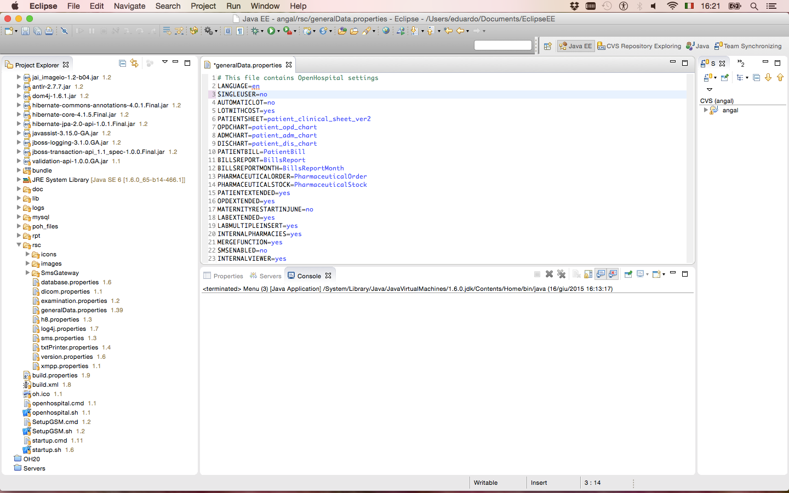). The report can also be printed by clicking on the print button (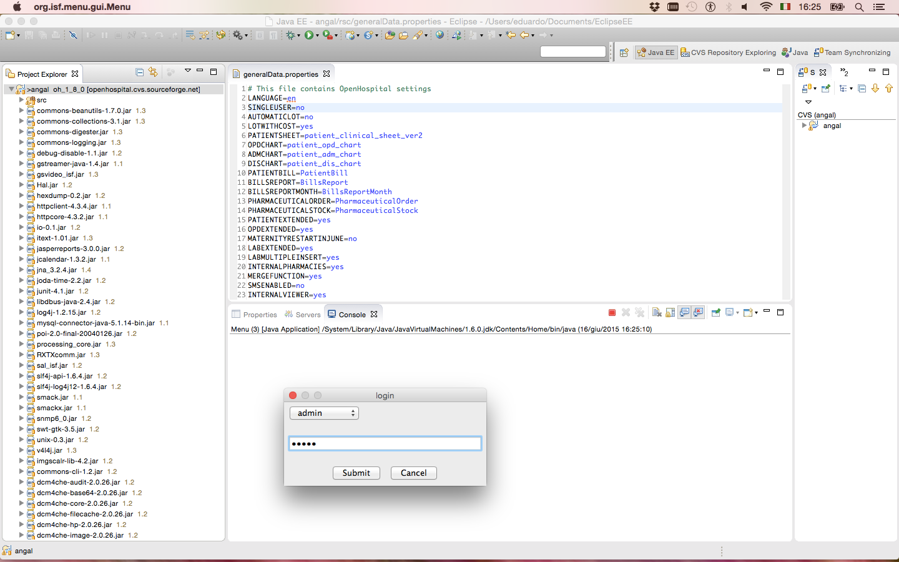).
| A PDF copy of every report is always saved within the folders of Open Hospital. Ask the Administrator or refer to the Administrators Guide. |
6.3 Functions of Accounting in Multi-user Mode
In multi-user mode, the Incomes Table will show only the Incomes for the logged user:
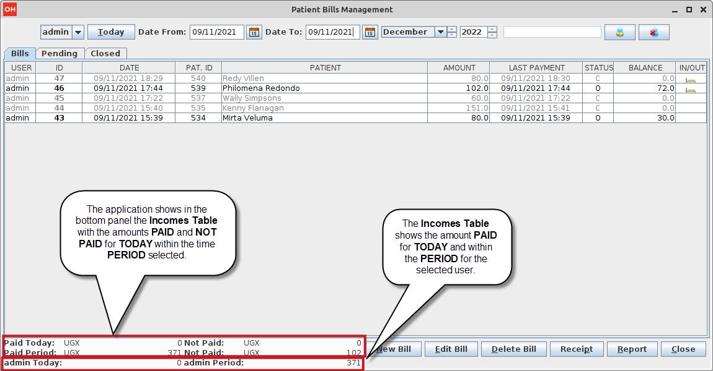
So, the Incomes Table will show the following information:
-
First Row: the PAID and UNPAID for Today
-
Second Row: the PAID and UNPAID for the specified Period
-
Third Row: the PAID and UNPAID for the current user for Today
The Administrator, or any enabled user (See User & Groups), can filter all incomes for all users with a payment amount:
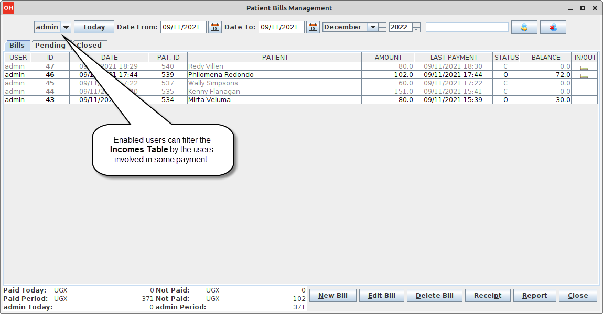
7 Vaccines (Vaccines)
7.1 Main Characteristics
The vaccines functions are used to manage vaccines for all the registered patients. It is possible to register vaccinations, modify or delete them. A specific search function is also available.
7.2 Functions of Vaccines
All functions available under Vaccines are accessible from the window Patient Vaccine Browser window shown below.
By default, the window shows in the Data table all the vaccinations added to the system in the last week.
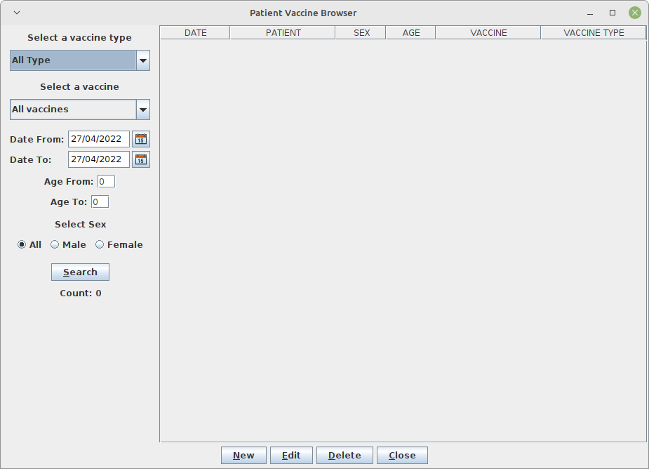
The following functions are accessible from the Buttons panel of the window Patient Vaccine Browser window:
-
New: insert a new vaccination.
-
Edit: modify a stored vaccination.
-
Delete: delete a stored vaccination.
-
Close: exit from the Patient Vaccine Browser window and return to the main menu.
Furthermore, there is a search function available in the Selection panel on the left of the window.
7.2.1 Search Vaccinations
Queries about vaccinations can be done using the search criteria available in the Selection panel area of the window (left side of the window). The results of the search are shown in the Data table area.
Vaccinations can be selected by choosing specific field values from the following list:
-
Vaccine type: selection of a vaccine type to filter the vaccines list
-
Vaccine: select a specific vaccine or all vaccines with "All vaccines
-
Date: Date: From and Date: To subsets the vaccinations to a specific time period
-
Age: Age From and Age To subsets the patients subject to vaccinations by an age range
-
Sex: All / Male / Female
| Vaccine Types and Vaccines can be defined by the Administrator. Ask the Administrator or check the Settings chapter. |
After the selection press the Search button; the system shows in the Data table the results of applying the search criteria requested.
The function also shows in the field Count: the number of vaccinations that are shown in the Data table (in the example there are 26).
7.2.2 Insert a New Patient Vaccination (New)
This function is used to register a new patient vaccination.
Press the New button in the Patient Vaccine Browser window to access the New Patient Vaccine window shown below.
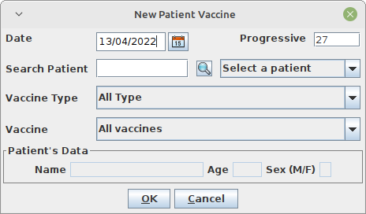
To record a new patient vaccination enters the following fields:
-
Date: the date of the vaccination
-
Progressive: the progressive number in the year (set automatically by the system)
-
Patient: select the patient by entering the Patient code or alternatively selecting a patient
-
Vaccine Type: the Vaccine Type
-
Vaccine: the vaccine
| Vaccine Types and Vaccines can be defined by the Administrator. Ask the Administrator or check the Settings chapter. |
When all the required information is entered the Buttons panel has the following choices:
-
OK: confirm the data and record the patient vaccination.
-
Cancel: close the window and return to the Patient Vaccine Browser window without recording the patient vaccination,
7.2.3 Modify Data of a Recorded Patient Vaccination (Edit)
To modify data of a patient vaccination select the vaccination in the Patient Vaccine Browser window and then press the Edit button. When the Edit Patient Vaccine window is shown, the record is available for changes. Date, vaccine type, and the vaccine can be changed:
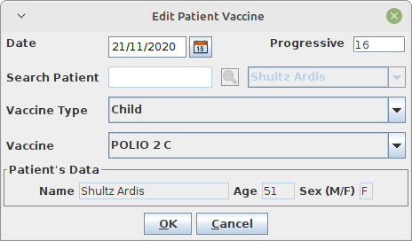
All the data for the vaccination can be changed except for the patient associated with the vaccination.
Once all the changes are made the Buttons panel has the following choices:
-
OK: confirm the new values (all the previous values will be lost).
-
Cancel: close the window and return to the Patient Vaccine Browser window without changing any values.
7.2.4 Delete a Patient Vaccination (Delete)
To delete a stored patient vaccination select the vaccination in the table in the Patient Vaccine Browser window. Next, press the Delete button. The confirmation window is shown. The vaccination can then be deleted. Deleted vaccinations are no longer available.
7.3 Vaccines Extended (Vaccines)
The vaccine functionality can be extended by changing the PATIENTVACCINEEXTENDED flag in the configuration file. Ask the Administrator or refer to the Administrators Guide.
7.3.1 Extended Vaccine Browsing
The extended version of the window looks like the following:
The only difference is that there is a new column containing the name of the patient.
8 Admission/Patient (Admission/Patient)
8.1 Main Characteristics
The Admission/Patient functionality allows registering a new patient, modifying their personal details, browsing their history, and admitting them to a hospital ward.
| An OPD registration can be started from here if the OPDEXTENDED flag is set to YES. Ask the Administrator or refer to the Administrators Guide. |
8.2 Functions of Admission/Patients
All the functions available under Admission/Patient are accessible from the Patient Browser window shown below.
By default, the window shows a Data table all of the patients currently present in the system.
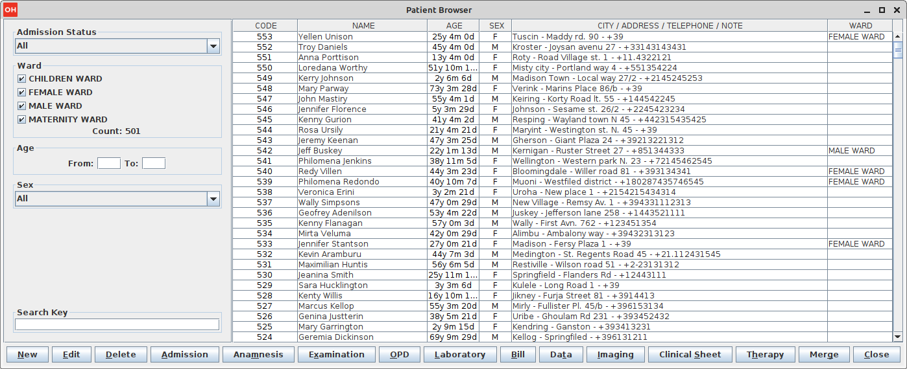
| If the list of patients becomes very large it is likely to result in a slowdown of the system depending on the network settings. It is possible to optimize the use of memory by changing the flag ENHANCEDSEARCH in the configuration file. Ask the Administrator or refer to the Administrators Guide. |
The following data are shown in the Patient Browser window:
-
Code: the patient’s code (automatically generated by the application)
-
Name: the patient’s full name
-
Age: the patient’s age in years, months, and days
-
Sex: the patient’s sex
-
City / Address / Telephone / Note: all this information separated by a -
-
Ward: the ward where this patient is currently admitted; this field is blank if the patient is not admitted to the hospital at the current time
The following functions are accessible from the Buttons panel of the window Patient Browser window:
-
New: insert a new patient.
-
Edit: modify an existing patient.
-
Delete: delete an existing patient.
-
Admission: manage the admission of the patient in the hospital.
-
Examination: manage the patient examination.
-
OPD: start an OPD visit on the selected patient.
-
Laboratory: start a new laboratory exam on the selected patient.
-
Bill: start a bill on the selected patient.
-
Data: modify data for a patient including the history of their admissions/out of patient visits as well as their malnutrition data.
-
Clinical Sheet: analyze the clinical sheet of a patient and print it.
-
Therapy: manage the therapy of a patient.
-
Close: exit from the Patient Browser window and return to the main menu.
| It is possible to have a DICOM function that allows for loading and viewing of image files for the selected patient by changing the flag DICOMMODULEENABLED in the configuration file. Ask the Administrator or refer to the Administrators Guide. |
| It is possible to have a Merge function that can be used in the case of double patient registration, by changing the flag MERGEFUNCTION in the configuration file. Ask the Administrator or refer to the Administrators Guide. |
Furthermore, a search function is available using the Selection panel on the left of the window.
8.2.1 Search Patient
Queries about patients can be done using the search criteria available in the Selection panel area of the window (left side of the window). The results of the search are shown in the Data table area.
Patient selection can be accomplished by specifying a specific value for the fields in the following list:
-
Admission Status. The choices are:
-
All: all patients are included in the selection
-
Admitted: only patients admitted are included in the selection
-
Not Admitted: only patients not admitted are included in the selection
-
-
Ward Select one or more wards:
-
Children Ward
-
Female Ward
-
Male Ward
-
Maternity Ward
-
-
Age. specify the patient’s age range
-
Sex. specify the patient’s gender:
-
All
-
Male
-
Female
-
-
Search Key Any character string entered is matched against the patient’s name and address. A complete string or only some characters can be entered and the system will show all the patients matching the string. For example, entering, isabe, will result in all patients that have isabe in their name being selected and displayed; so both "Glennis Isabelle" and "Isaiah Isabelle" are shown.
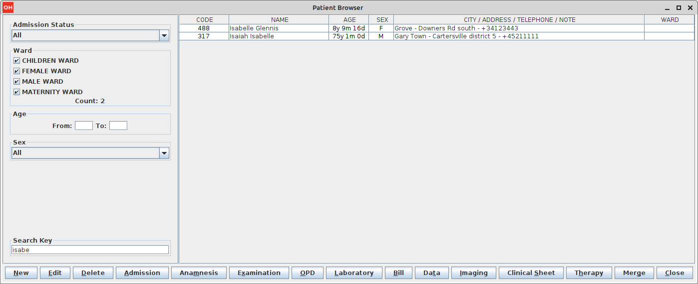
| Wards can be defined by the Administrator. Ask the Administrator or check the Settings chapter. |
8.2.2 Search Patient Enhanced
Memory usage can be optimized when the number of registered patients becomes huge by changing the ENHANCEDSEARCH flag in the configuration file. Ask the Administrator or refer to the Administrators Guide.
Once the enhanced search has been enabled the new Patient Browser window looks like following:
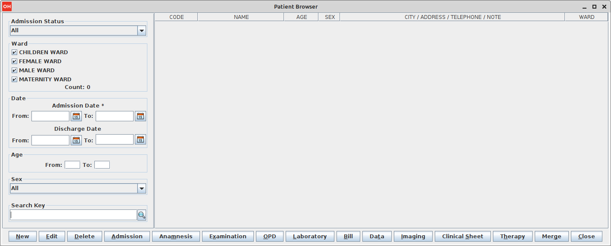
Initially, the list is empty. To show some patients, enter a search criterion in the Search Key field and then press the search () button and the window will show only patients matching the specified criteria.
Moreover, further search criteria are added in this mode:
-
Admission Date: search for all patients admitted in between the specified dates, regardless if they are still admitted or not
-
Discharge Date: search for all patients discharged in between the specified dates, regardless if they were admitted again later on
| To show the full patient list again just press the search button with an empty search criterion. |
8.3 Insert a New Patient (New)
This function is used to register a new patient into the hospital.
Press the New button in the Patient Browser window to access the New Patient window shown below.
To record a new patient, enter the following fields:
-
First Name: the patient’s first name
-
Second Name: the patient’s last name or other names
-
Age: the patient’s age in years
-
Sex: the patient’s sex: male or female
-
Address: the address of where the patient lives
-
City: the city where the patient lives
-
Next of Kin: the name of the patient’s closest relative
-
Telephone: the patient’s telephone number
-
Note: A free text for adding notes about the patient
When finished entering the data the Buttons panel has two choices:
-
OK: confirm the data and add the patient’s record.
-
Cancel: close the window and return to the Patient Browser window without adding the patient.
8.3.1 Modify Data of a Patient (Edit)
To modify the data of a patient select the patient in the Patient Browser window and then press the Edit button. When the New Patient window is shown, the record is available for changes. All the data can be changed.
When finished modifying the data in the Buttons panel there are two choices:
-
OK: confirm the new values (all the previous values will be lost).
-
Cancel: close the window and return to the Patient Browser window without changing the patient’s data.
8.3.2 Delete a Patient (Delete)
To delete a stored patient select the patient in the Patient Browser window. Next press the Delete button. The name of the patient is shown in the Question window below: by pressing "yes", the patient’s data is deleted. Deleted information is no longer available in the system. The patient is not completely removed from the system; ask the Administrator to restore the data if needed.
In the Buttons panel the choices are:
-
Yes: confirm the deletion of the patient.
-
No: close the window and return to the previous window.
8.4 Insert a new Patient Extended (New)
The New Patient functionality can be extended by changing the PATIENTEXTENDED flag in the configuration file. Ask the Administrator or refer to the Administrators Guide.
8.4.1 Additional Features
The New Patient Extended module affords the following improvements:
To record a new patient, the following fields are available:
-
Tax Number ID: is the national ID or other ID that uniquely identifies the patient
-
Age / BirthDate / Description: the age can be specified in three different ways:
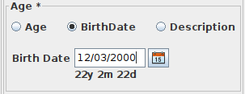
Regardless of the way it is entered the age is converted to an age in years in the Patient Browser window.
| The date picker includes a "Clear" option (lower right corner) to remove or clear the current date value. |
-
BloodType: valid values are 0+, A+, B+, AB+, 0-, A-, B-
-
Marital Status: valid values are Single, Married, Divorced, and Widowed. If left empty, the default is Unknown
-
Profession: valid values are Other, Farming, Construction, Medicine, Food/Hospitality, Homemaker, Mechanic, Business, Janitorial Services, Mining, and Engineering. If left empty, the default is Unknown
-
Father’s Name: specify the name of the patient’s father and if he is still alive
-
Mother’s Name: specify the name of the patient’s mother and if she is still alive
-
Parents Together: specify if the parents are still together
-
Has Insurance: specify if the patient has a health financial protection plan (insurance)
-
Load File: a button used to load a patient’s picture (it will be cropped and squared)
| Age Types (Descriptions) can be defined by the Administrator. Ask the Administrator or check the Settings chapter. |
8.4.2 Height and Weight Functionality (Height and Weight)
The height and weight of the patient are not required when registering a new patient. It is done through the examination module available in the Patient Browser window.
8.4.3 Patient Photo (New Photo)
The New Patient functionality can be extended by changing the VIDEOMODULEENABLED flag in the configuration file. Ask the Administrator or refer to the Administrators Guide.
Once the video module has been enabled the New Patient window looks as follows:
By clicking on the New Photo button, the webcam should be activated (check for any lights on the device). The Patient Photo window should show what the camera is pointing at.

By clicking again on the New Photo button, a picture is taken ready to be attached to the patient information.
8.4.3.1 Camera Settings ()
If nothing happens when pressing the New Photo button, press the switch camera button that allows switching among the webcams connected to the computer if there is more than one; if only one camera is connected to the computer it is useful to reset the camera settings and restart it.
Once the camera is activated and the eye-view of the camera is visible, press on + or - to increase or reduce the image quality.
Open Hospital attempts to automatically set the best quality for any webcam connected to the computer and remembers the last settings used.
| If the camera does not function then change the flag to DEBUG in the configuration file to generate additional diagnostic information. Ask the Administrator or refer to the Administrators Guide. |
8.5 Admission Functions (Admission)
The admission functions include the managing of patient admission, including surgery, delivery, and discharge.
To access the Admission function, first highlight the patient in the Patient Browser window. Next, press the Admission button.
If the patient is not admitted then the New Admission window is shown.
If the patient is already admitted then the Edit Admission Record is shown.
8.5.1 Start the Admission of a Patient (Admission)
Once a patient is registered, they can be admitted to a hospital ward.
First, to insert the admission of a patient highlight the patient in the Patient Browser window. Once this is done, press the Admission button. The New Admission window is shown (if the patient is already admitted the Edit Admission Record window is shown):
To start an admission, enter the appropriate date into the following fields (on the right side of the window):
-
Ward: the ward where the patient is admitted
-
From Health Unit: (not mandatory) in case of referral optionally enter the name of the facility where the patient came from
-
Progressive in Year: is the progressive number per year and per ward automatically set by the system; the value can be changed as needed
-
Admission Date: the date of the admission, automatically set to today
-
Admission Type: the type of admission (i.e. Ambulance, Self, Referral, etc.)
-
Malnutrition: (not mandatory) in case of malnutrition optionally check this box so management of the malnutrition control can be done in the Patient Data window (see the Malnutrition control function).
-
Diagnosis IN: the diagnosis the patient was admitted with
| It is possible to filter to find diseases more easily. To do this, enter a text fragment in the search field that is part of the disease name. The closer the search text comes to the name of the disease being searched for, the more precise the search is. |
| Wards, Admission Types, and Diagnosis can be defined by the Administrator. Ask the Administrator or check the Settings chapter. |
| The "Progressive in Year" field is automatically populated by the program; in the case of maternity, the counter starts from the first of January or from the first of June based on the current norm for the health facility. To change the behavior please ask the Administrator to set the MATERNITYRESTARTINJUNE flag in the configuration file or refer to the Administrators Guide. |
When done entering data the Buttons panel has the following choices:
-
Save: confirm and persist the current values.
-
Examination: open the Examination window (see Patient examination).
-
Close: close the window and return to the Patient Browser window without applying any changes.
Once the Save button is pressed the New Admission window closes and the patient’s status is changed in the Patient Browser window as shown in the following figure:
8.5.2 Patient Examination
During a patient examination patient, general parameters such as weight, height, arterial pressure, heart rate, temperature, saturation, respiratory rate, and auscultation can be recorded. Open Hospital calculates the patient BMI automatically.
There are two ways to access the module. In the Patient Browser window, highlight the patient and click Examination. Or in the New Admission or Edit Admission Record window, click the Examination button. The following window is shown:
The window is divided into two areas: The panel on the left is where new information is entered and the area where the examination history is displayed is on the right.
Enter the following information:
-
Date: the date of the examination; by default, it is set to the current date and time
-
Height: the patient’s height (in cm)
-
Weight: the patient’s weight (in Kg)
-
Arterial Pressure: the patient’s arterial pressure (in mmHg)
-
Heart rate: the patient’s heart rate (in bpm)
-
Temperature: the patient’s temperature (in C)
-
Saturation: the patient’s saturation (%)
-
HGT: the result of the Hemo Glucose test (in mg/dl)
-
Respiratory Rate: the patient’s respiratory rate (in bpm)
-
Diuresis Vol 24H: the patient’s daily urine volume (in ml)
-
Diuresis: the Diuresis description
-
Bowel: the description of bowel function
-
Auscultation: the patient’s auscultation. This will default to unknown if not specified. Options are: Unknown, Normal, Bronchial, Crackles, Rhonchi, Stridor, and Wheezes
-
Complain: any additional notes concerning the examination
After entering the data, Open Hospital automatically calculates the BMI and displays the result on the human figure at the left.
When all the data has been entered, click Save to save the examination.
To remove an examination, select one or more records in the lower table and click Delete to delete them.
8.5.3 Insert or Modify Surgery Data
To insert/modify operations data of a patient admission first highlight the patient in the Patient Browser window and then press the Admission button. The Edit Admission Record window is shown.
Operation related data can be inserted or modified directly by selecting the Operation tab at the top of the window during the admission or modification process of the admission.
Operations data that can be managed are:
-
Operation: the operation type
-
Date: the operation date (must be at least older than, or equal to the admission date and at most, more recent than, or equal to the discharge date)
-
Result: the result of the operation
-
Trans Unit: (not mandatory) the number of transfusion units of blood were used
-
Remarks: (not mandatory) comments about the operation
It is possible to record several operations at once. The buttons New, Save and Delete at the top right of the table allow the manipulation of the items of the table.
To add a new operation, click on the button New and enter the data as mentioned above, and then click on Save.
| Clicking on the button Save just adds the operation to the table; it is not yet permanently recorded. |
To delete a line from the table, select the line to delete by clicking on it (it automatically highlights), then click on the button Delete. When finished, click on the button Save below the table to save the changes.
| Operation Type and Operations can be defined by the Administrator. Ask the Administrator or check the Settings chapter. |
8.5.4 Insert or Modify Delivery Data
If a female patient is admitted, the Maternity ward will be present in the ward list and, by selecting it, the Edit Admission Record window will change as shown below:
In the Delivery tab, information about the Maternity case can be specified including:
-
Visit Date: the date of a visit before the delivery, if any
-
Weight: the weight of the mother before the delivery, if measured
-
Treatment Type: the treatment type given to the mother, if any
-
Delivery Date: the date of the delivery
-
Delivery Type: the type of the delivery
-
Delivery Result Type: the result of the delivery
-
Control Dates: the dates of control after the delivery
-
Abort Date: the date of the abort if the result of the delivery was an abortion
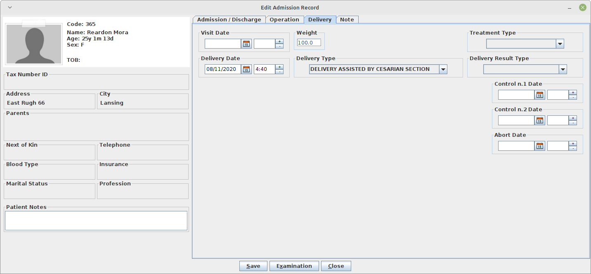
| Treatment Type, Delivery Type, and Delivery Result Type can be defined by the Administrator. Ask the Administrator or check the Settings chapter. |
8.5.5 Discharge of a Patient (Admission)
To discharge a patient from the hospital highlight the patient in the Patient Browser window and then press the Admission button. The Edit Admission Record window is shown.
To complete the discharge of the patient enter the following data:
-
Discharge Date: the date of the discharge
-
Bed Days: the number of days admitted; computed by the system by finding the difference between admission date and discharge date
-
Discharge Type: the type of the discharge
-
Diagnosis OUT: the diagnosis the patient was discharged with
| As in the case of Diagnosis IN, it is possible to filter to find diseases more easily. |
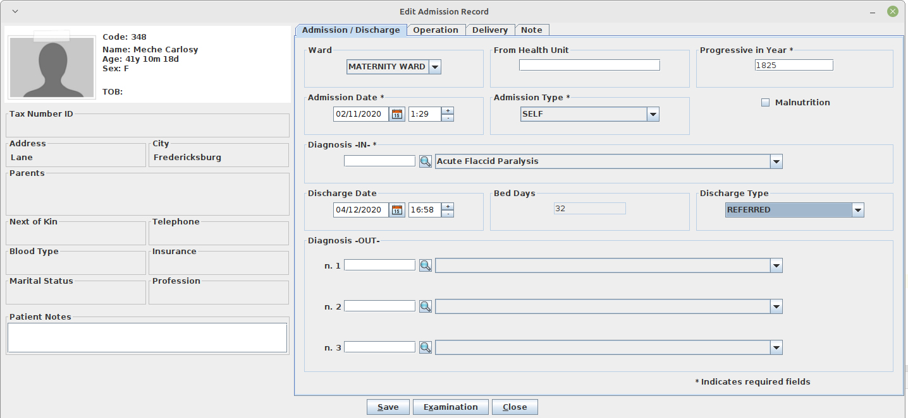
| Discharge Types and Diseases can be defined by the Administrator. Ask the Administrator or check the Settings chapter. |
When all the data has been entered the Buttons panel has the following choices:
-
Save: confirm the values on the window.
-
Examination: to open the Examination window (See Patient examination).
-
Close: close the window and return to the Patient Browser window without applying any changes.
Once the Save button is pressed the Edit Admission Record window closes and the patient’s status is changed in the Patient Browser window as shown in the following figure:
8.6 OPD (OPD)
If the OPDEXTENDED flag is set as YES in the configuration file (ask the Administrator) the button OPD in the Patient Browser window allows for starting an OPD by selecting the related patient first (see Create a new patient visit for more information).
8.7 Bill (Bill)
The button Bill in the Patient Browser window is used to start a bill for a selected patient (see Insert a new bill for more information).
8.8 Manage Patient Historical Data (Data)
This function allows modifying data about a patient and modifying or deleting the history of admissions and discharges of a patient. Malnutrition can also be managed with this function.
To access the patient historical data function, first, highlight the patient in the Patient Browser window. Next, press the Data button. The Patient Data window is shown:
The screen is divided into three areas:
-
Patient summary (on the left)
-
Data table (on the right)
-
Buttons panel
The Patient summary area shows a summary of the patient’s data.
The Data table shows a summary of all the outpatients (OPD) visits and all the admissions related to the patient.
The following functions are accessible from the Buttons panel of the window Patient Data:
-
Edit: modify the data of an admission or an outpatient visit.
-
Delete: delete an existing admission.
-
Malnutrition Control: create, modify or delete malnutrition control data of a patient.
-
Close: exit from the function Patient Data and return to the Patient Browser window.
8.8.1 Modify Data of an Admission (Edit)
To modify the data of an admission select the admission in the Data table of the Patient Data window and then press the Edit button. When the Edit Admission Record window is shown, the record is available for changes. All data can be changed.
When the changes are complete the Buttons panel has the following choices:
-
Save: confirm new values (all the previous values are lost).
-
Examination: open the Examination window (See Patient examination).
-
Close: close the window and return to the Patient Data window without applying any changes.
8.8.2 Modify Data of an Outpatient Visit (Edit)
To modify the data of an outpatient visit select the OPD in the Data table of the Patient Data window and then press the Edit button. When the Edit OPD Registration window is shown, the record is available for changes. All data can be changed.
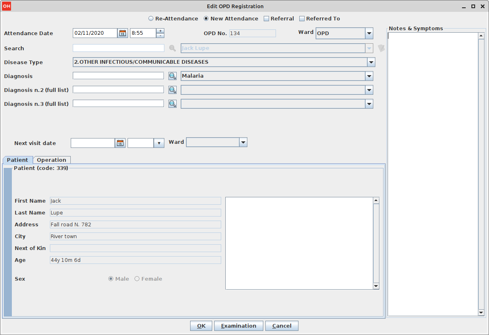
When the changes are complete the Buttons panel has the following choices:
-
Save: confirm new values (all the previous values are lost).
-
Examination: open the Examination window (See Patient examination).
-
Cancel: close the window and return to the Patient Data window without applying any changes.
8.8.3 Delete an Admission (Delete)
To delete a stored admission select the admission in the Patient Data window. Next, press the Delete button. A confirmation window is shown; now the admission can be deleted. Deleted admissions are no longer available.
The Buttons panel has the following choices:
-
Yes: confirm the deletion.
-
No: close the window and return to the previous window.
8.8.4 Delete an Outpatient Visit (Delete)
To delete a stored outpatient visit (OPD) highlight it in the Patient Data window. Next, press the Delete button. A confirmation window is shown; now the OPD can be deleted. Deleted outpatient visits are no longer available.
The Buttons panel has the following choices:
-
Yes: confirm the deletion.
-
No: close the window and return to the previous window.
8.8.5 Manage Malnutrition Control of a Patient (Malnutrition Control)
The malnutrition control function is available only for the admissions that have concerns about malnutrition (malnutrition field activated in New Admission window, see the next page).
The Malnutrition control function allows the registration of specified visits for those patients who need to control their weight/height index.
To access the Malnutrition control function, highlight the appropriate admission in the Patient Data window. Next, press the Malnutrition Control button. The Malnutrition Browser window is shown:
This function supports the insertion (New) of a new malnutrition control, the modification (Edit) or deletion (Delete) of an existing malnutrition control.
8.8.5.1 Insert a New Control (New)
By pressing the New button in the Malnutrition Browser window, the New Malnutrition window shown below is available:
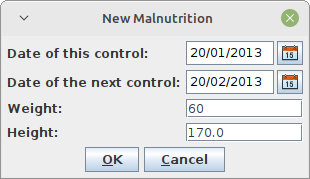
To record a new control, enter the following fields:
-
Date of this control: the system automatically sets the date to today
-
Date of next control: the date of the next planned control
-
Weight: the weight of the patient; use any kind of measure with decimal notation
-
Height: the height of the patient; use any kind of measure with decimal notation
8.9 Clinical Sheet (Clinical Sheet)
The Clinical Sheet functionality is very similar to the Data functionality (see Patient Browser window).
To access the Clinical sheet function, highlight the patient in the Patient Browser window. Next, press the Clinical Sheet button. The Patient Data window is shown:
The window does not allow changing the data but, for the selected patient, it shows all the outpatient (OPD) visits, the Admissions, his/her Laboratory exams and the various surgeries they underwent; by clicking on a row in the Data table at the top of the window, the related laboratory exams will be shown as follows:
-
the selected row is an Admission: all the exams done between the admission date and the discharge date are shown in the Data table, in the Exams tab;
-
the selected row is an outpatient (OPD) visit: all the exams done after the selected OPD visit until the next one (if any) or next admission date (if any) are shown in the Data table, in the Exams tab.
The tab Operations shows the various operations recorded for the selected patient between the admission date and the discharge date.
The tab Drugs shows the drugs recorded for the selected patient.
The Buttons panel has the following choices:
-
OPD Chart: print the OPD chart if the selected row in the grid on top is an OPD visit.
-
Admission Chart: print the Admission chart if the selected row in the grid on top is an Admission.
-
Discharge Chart: print the Discharge chart if the selected row in the grid on top is an Admission and the patient is already discharged.
-
Launch Report: print the clinical sheet of a patient.
-
DICOM: launch the DICOM viewer.
-
Close: close the window and return to the Patient Browser window without applying any changes.
| The DICOM flag in the configuration file must be changed to activate the DICOM functionality. Ask the Administrator or refer to the Administrators Guide. |
By pressing the Launch Report button in the Patient Data window, a new window is shown:
The application is set to get the entire history of the patient, but this can be changed by querying different date ranges and a specific set of information.
| it is possible to double-click an item on any table to automatically restrict the Clinical Sheet report to the selected date ranges and item’s category. |
8.9.1 DICOM (DICOM Viewer)
The DICOM flag in the configuration file must be changed to activate the DICOM functionality. Ask the Administrator or refer to the Administrators Guide.
In the Patient Data window, click the DICOM button to access the DICOM Viewer window as shown below.
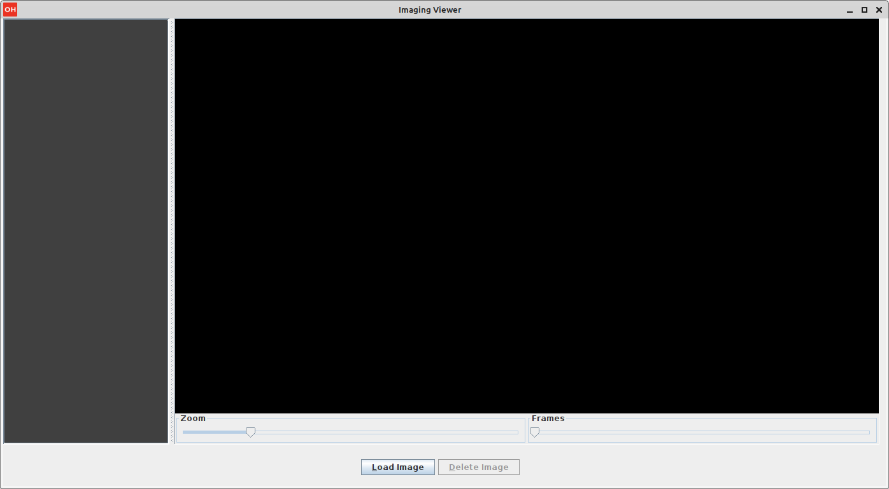
This module allows attaching DICOM files to the patients folder. To do this, click the Load DICOM button. The following window is shown:
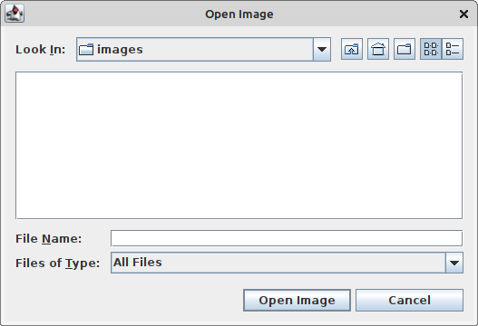
In the case of multi-frame DICOM the whole folder can be selected:
Next, the following data to be used for the DICOM is prompted for (or the multi-frame DICOM series):
-
Date: the system will propose the current date or other dates provided by the DICOM file itself
-
Category: optionally select a Dicom category (see Dicom Types):
-
Description: the description to be used.
N.B. There is no Edit DICOM, so if a mistake is made, delete the DICOM file (Delete DICOM) and then reload it (Load DICOM) again.
Find the DICOM file and click the Open DICOM button to load the file into the DICOM viewer.
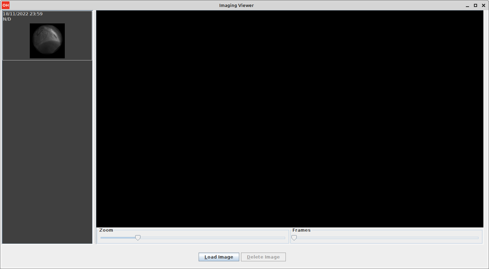
To view the file in the main window, double-click on it.
The Zoom slider can be used to Zoom in or out of the image.
More than one DICOM file can be loaded into a patient folder. It is possible to delete a DICOM file from the patient’s folder. First, select the file in the left view and then click the Delete DICOM button.
The thumbnails on the left can be hidden by changing the DICOMTHUMBNAILS flag in the configuration file. Ask the Administrator or refer to the Administrators Guide.
8.10 Therapy Management (Therapy)
To manage the therapy of a patient, select the patient in the Patient Browser window. Next, press the Therapy button. The specific window for therapy management of the selected patient is shown. The window has no name but it is typically referred to as the Therapy window. The name of the selected patient is shown at the top.
In the Therapy window, it is possible to insert, modify or remove a therapy for the selected patient.
In addition, from the Therapy window, it is possible to insert or remove (not modify) scheduled visits for the selected patient.
The window is complex, see the comments below to understand the structure.
8.10.1 Add a Therapy (Add Therapy)
To add a new therapy for the patient, press the Add Therapy button on the right of the window. The New Therapy Entry Form window is shown.
A therapy defines for every pharmaceutical: the quantity, frequency, and period of use.
More than one therapy for the same patient can be added. The set of therapies defined for a patient is called a Therapy plan.
| To better explain how the function Add a therapy works, the Therapy window below shows the results of the therapy defined in the New Therapy Entry Form shown above. |
To add a therapy the following information is required:
-
Pharmaceutical: the pharmaceutical of the therapy; in the example above Cyclophosphamide 500mg (highlight the desired pharmaceutical)
-
Quantity: set the quantity; this can be done by clicking on the small up/down arrows (for small quantity) or moving the cursor on the right (for large quantity); in the example above the selected value is 4
-
Frequency within day: set how many times (frequency) the dose has to be given during one day (possible choices are: one, two, three, four); in the example above One means once per day
-
Frequency within period: set the periodicity of the therapy; in the example above every two days (a quantity of 4 Cyclophosphamide 500mg every two days has to be given)
-
Period: set the length of therapy; to do it select days, weeks, and months; in the example above, the therapy is 11 days long (4 days and 1 week)
-
Starts Ends: set start and end dates of the therapy; in the example, the therapy starts on November 20th and finishes on November 30th
-
Note: an optional area for free text or notes
Once the data is entered the Buttons panel has the following choices:
-
OK: confirm the data of the therapy. The therapy is not saved until it is confirmed with the Save button in the Therapy window (see Save function described below).
-
Cancel: close the window and return to the Therapy window.
8.10.2 Modify a Therapy (Edit Therapy)
To modify a therapy highlight one occurrence of the therapy (see box above) in the Therapy window and then press the Edit Therapy button. The Edit Therapy Entry Form window will appear. Any of the data can be modified as in the Add a therapy function.
See Add a therapy function for a detailed description.
8.10.3 Remove a Therapy (Remove Therapy)
To remove a therapy highlight one occurrence of the therapy (see box above) in the Therapy window and then press the Remove Therapy button and the therapy is removed from the window and the Save button will be enabled (if not already enabled). The removal of a therapy is not effective until it is confirmed with the Save button (see Save function).
8.10.4 Check Availability of the Pharmaceuticals (Check Availability)
When the therapy plan is entered (all the therapies of a patient) press the Check Availability button in the Buttons panel on the right side of the Therapy window to check the availability of the related pharmaceuticals in the hospital. If the pharmaceutical checked is present in the quantity requested by the therapy plan green-colored checkmark is shown.
If there are not sufficient quantities available, the application shows the small window (shown below), called Therapy Not Available:
This window provides information that the therapy is not available but it does not block the input of the Therapy plan. Click the OK button to dismiss the window.
After the check, in the Buttons panel of the Therapy window if there is a red X and the text NOT AVAILABLE this means that at least one of the involved drugs is not available.
| The check can also be done therapy by therapy and not only at the end of the input of all the therapies. |
The check function is not mandatory, the therapy plan can be saved without checking the presence of the pharmaceuticals in the hospital (see Save function below).
8.10.5 Save Function (Save)
When the input of the therapy plan is completed, press the Save button in the Buttons panel of the Therapy window. Be aware that the therapy plan is saved when the Message window is shown:
If the availability check has not been executed yet (see Check availability of the pharmaceuticals) the Not checked window is shown:
The Buttons panel has the following choices:
-
OK: confirm the therapy plan; if the check for the existence of the pharmaceuticals in the hospital has not been done the application saves the therapy plan and shows the confirmation window shown above.
-
Cancel: return to the Therapy window without saving the therapy plan.
If the availability check is done (see Check availability of the pharmaceuticals) but the drugs requested by the therapy plan are not available in the hospital, the Not Available window is shown:
The Buttons panel has the following choices:
-
OK: confirm the therapy plan; the therapy is saved but there are not the requested pharmaceuticals in the hospital. The application saves the therapy plan and shows the confirmation window shown below.
-
Cancel: return to the Therapy window without saving the therapy plan.
Whether the availability check that the pharmaceuticals are present in the hospital is done or not, when the application shows the notification window below the therapies plan is saved.
Press OK to finish.
8.10.6 Close Function (Close)
The close function exits from the Therapy window. Press the Close button to access the Close function. The Select an option window is shown:
The Buttons panel has the following choices:
-
Yes: this function is the same as the Save function (Save) described above.
-
No: return to the Therapy window without saving the therapy plan.
-
Cancel: exit the function and return to the Therapy window without applying any changes.
8.10.7 Notify & SMS
Use these two checkboxes to set the therapies plan for this patient as important (not implemented yet) and notifiable via SMS.
Briefly, the SMS notification works in the following way:
-
therapies: a notification will be sent to the patient with an SMS at 8:00 am, with text REMINDER: + therapy details;
-
visits: a notification will be sent to the patient with an SMS 24 hours before the scheduled date and time, with the text REMINDER VISIT: + visit details (see SMS Manager).
8.10.8 Visits
By clicking on the Add Visit button, the following window is shown:
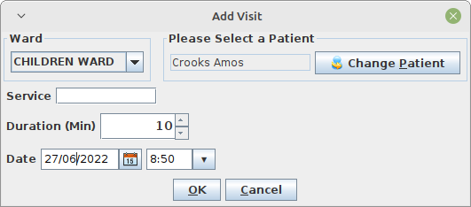
The patient is already selected, while other fields need to be set:
-
Ward: to specify the ward where the patient has to be received (it will be shown in the Worksheet, see Worksheet)
-
Service: a brief description of the service that will be provided to the patient (optional)
-
Duration (Min): the estimated duration of the service that will be provided (optional, default is 30 minutes)
-
Date: the date and the time for the appointment
Press OK to save the appointment and it will be shown in the calendar, along with the therapies.
| By pressing the Worksheet button a visit can be added also there after checking the actual workload for a specific date. |
8.11 Merge Function (Merge)
The merge function is used to merge two patients histories into a single case. This is used to fix the case of two different registrations when a patient is admitted to the Hospital.
To merge data of two patients requires the highlighting of both of them in the Patient Browser window.
Once the two patients are selected, press the Merge button. The Merge window is shown:

By pressing Yes, the patient with the smaller code is deleted and all their history transferred to the other newer patient record, that is to say:
-
Admission History
-
Height & Weight History
-
Laboratory History
-
OPD History
-
Bills History
-
Pharmaceuticals Stock Ward History
-
Therapy History
-
Visit History
-
Vaccine History
The other (older) patient is then deleted.
8.11.1 Different Names
If two patients with different names are merged the final name must be chosen in the window shown below:
8.11.2 Different Sex
If two patients with a different sex are merged the operation is not allowed, with the window shown below:
9 Statistics (Statistics)
9.1 Main Characteristics
The purpose of this function is to extract data registered in the application and present it in a useful fashion.
Open Hospital provides a set of reports designed for the Ugandan Ministry of Health (HMIS) and for the Kenyan Ministry of Health (MOH) as well as national independent reports (OH). All of these reports may be useful for any organization and can be added or removed as explained in the Administrator Manual’s chapter 6 Reports.
Open Hospital ships with the following set of reports:
-
OH001 - Registered Patients
-
OH002 - Registered patients by origin
-
OH003 - Registered patients by Age and Sex
-
OH004 - All incomes by price codes
-
OH005 - Count outpatient
-
OH006 - Count outpatient diagnosis
-
OH007 - Lab monthly basic
-
OH008 - Lab summary for OPD
-
OH009 InPatient Report
-
OH010 OutPatient Report
-
OH011A - Revenues, Incomes & Receivables (All)
-
OH011B - Revenues, Incomes & Receivables (Pending)
-
OH011C - Revenues, Incomes & Receivables (Month)
-
OH011D - Revenues, Incomes & Receivables (Ward / Month)
-
HMIS 108 - page 1 - 1. census info
-
HMIS 108 - page 1 - 2. referrals
-
HMIS 108 - page 1 - 3. operations
-
HMIS 108 - In Patient (diagnosis In)
-
HMIS 108 - In Patient (diagnosis Out)
-
HMIS 105 - Opd attendance
-
HMIS 105 - Opd referrals
-
HMIS 105 - Opd by diagnosis
-
HMIS 55b - Lab monthly formatted
-
HMIS 33b - Weekly epidemiological surveillance
-
HMIS 33b - Weekly epidemiological surveillance over 5 years old
-
HMIS 33b - Weekly epidemiological surveillance under 5 years old
-
MOH 717 - Monthly Workload Report for Hospitals (Page1)
-
MOH 717 - Monthly Workload Report for Hospitals (Page2)
-
MOH 705A - Under 5 - Daily Outpatient Morbidity Summary Sheet
-
MOH 705A - Over 5 - Daily Outpatient Morbidity Summary Sheet
-
OH23A1 - Open bills list: a report that shows the list of opened bills (pending bills) per period
-
OH23B1 - Revenues, Incomes & Receivables: gives the list of incomes per period
9.2 Report Launcher (Launch Report)
This function is used to produce all reports listed in the previous paragraph. Pressing the Statistics button on the main menu the Report Launcher window is shown:
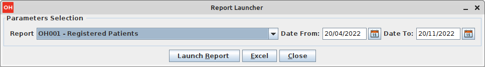
To produce one report:
-
Select a report from the list
-
Specify the period (it could be month-year or from date-to date depending on the report)
-
Press the Launch Report button for PDF or Excel for CSV (Comma Separated Values) format
After some time passes the JasperViewer will show the generated report as follows:
| By default, an internal PDF viewer is used. An external PDF reader can be used by modifying the INTERNALVIEWER flag in the configuration file. Ask the Administrator refer to the Administrators Guide. |
The report can be saved as a PDF by clicking on the save button () or printing it by clicking on the print button ().
| A PDF copy of every report is always saved within the folders of Open Hospital. Ask the Administrator or refer to the Administrators Guide. |
10 Reports (Reports)
10.1 Main Characteristics
This function is used to generate reports about the hospital like a list of exams, diseases, etc.
Open Hospital currently only has these three reports:
-
Exams List
-
Diseases List
-
Operations List
10.2 Reports
By pressing Reports from the main menu, the Reports menu is accessed. From this menu, the following types of reports are available: Exams List, Disease List and Operation List.
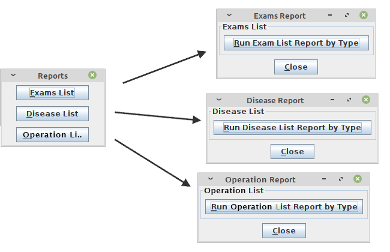
10.2.1 Exams List (Exams List)
This report is a list of exams, divided by types, as defined by the Administrator.
10.2.2 Disease List (Disease List)
This report is a list of diseases, divided by types, as defined by the Administrator.
10.2.3 Operation List (Operation List)
This report is a list of operations, divided by types, as defined by the Administrator.
11 Communication (Communication)
11.1 Main Characteristics
The Communication module can be enabled by changing the XMPPMODULEENABLED flag in the configuration file. Ask the Administrator or refer to the Administrators Guide.
Through the communication module events and notifications can be shared among users logged into the system,
This function is used to chat and share information with other users logged in the system if in turn the application has been set in multi-user mode and an XMPP Server is active and running (Ask the Administrator or refer to the Administrators Guide).
The functionality allows the following tasks:
-
Chat
-
Admissions notifications
-
Pharmaceutical Stock critical levels notifications
-
Report sharing
11.2 Chat
By pressing the Communication the Communication window is shown:
It shows all users logged into the system. Some of them have a green circle near their name: it means that they are currently logged in the system and they are the only ones that can be interacted with. Others have the grey circle near their name: it means that they logged in at least one time in the past but are not currently using the system.
By double-clicking on an active user (i.e. Allan in the figure above) a chat session can be started, as shown in the figures below:
To send a message to Allan, type the message into the white box at the bottom and then press ENTER; the message is immediately sent to Allan; when Allan does the same, his response is immediately received. Other users logged in (i.e. Mary in the figures above) cannot see this private conversation.
11.3 Admission/Discharge Notifications
In the New Admission window, in the Buttons panel there is a dropdown box, as shown below:
The box lists all users currently logged into the system (those with the green circle near the name) and allows to send an alert or not (nobody) when the Save button is pressed.
11.3.1 Admission Notifications
If the decision is to send a notification about a new admission for user Allan, when the Save button is pressed, Allan sees in his Communication window a message like new patient admission: followed by the patient’s name and the related ward.
An example of the Allan Communication window is shown below:
11.3.2 Discharge Notifications
Similarly, notifications can be sent for discharge events. If the decision is to send a notification about a discharge to user Allan when the Save button is pressed, Allan sees in his Communication window a message like discharged patient: followed by the patient’s name and the related Discharge Type.
An example of the Allan Communication window is shown below:
11.4 Pharmaceuticals Critical Level Notifications
In the Stock Movement window there is a new box at the bottom, as shown below:
The box becomes active and useful only if the movement is going to reduce the selected pharmaceutical below the critical level. Given such an occurrence the event can be shared with another user logged into the system at the given time when the OK button is pressed.
Assuming such a notification about this discharging movement is to be shared with user Allan, when the OK button is pressed, Allan receives in his Communication window a message like ALERT: followed by the pharmaceutical name and the text is about to end as shown below:
11.5 Report Sharing
In the Report Launcher window there is a new box at the bottom, as shown below:
This allows for the decision to share a new report with another user logged into the system when the Launch Report button is pressed.
Assuming such a notification about this report is to be shared with user Allan when the Launch Report button is pressed, Allan sees in his Communication window a message like ** admin wants to share with you this report: followed by the report name and a clickable icon that links Allan to the related report. An example of this message is shown below:
12 Settings (Settings)
12.1 Main Characteristics
Setup and customization of Open Hospital can be performed through the Settings functionality. This feature allows the configuration all types and data used in the current Open Hospital implementation.
|
Pressing the Settings button main menu provides access to the Settings menu. From the Settings menu the following functions are available:
-
Types: define and manage the various types listed in the menu
-
Hospital: set some Hospital information (name, address, telephone, email, etc.)
-
Ward: define which departments are in the hospital
-
Disease: define which diseases are diagnosed in the hospital
-
Exams: define which laboratory exams are performed in the hospital
-
Operation: define which surgical operations are provided by the hospital
-
Vaccine: define which vaccines are given in the hospital
-
Prices lists: define unitary costs of the services provided by the hospital
-
Supplier: manage medicals suppliers
-
SMS Manager: send SMS or schedule an SMS sending
-
Users & Groups: manage information about various users and groups
12.2 Types (Types)
Once the Types button is pressed in the Settings menu the Types menu is presented:
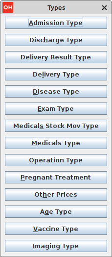 |
From the Types menu the definition and management of the following types of functions are possible:
-
Admission Type: the way the patient is admitted to the hospital
i.e. Ambulance, Self, Referral, etc. -
Discharge Type: the way the patient is discharged from the hospital
i.e. Healed, Unchanged, Dead, etc. -
Delivery Result Type: the various childbirth results for reporting
i.e. Live Birth, Newborn Death, Fresh Still Birth, etc. -
Delivery Type: the ways the mothers are assisted in childbirth
i.e. Normal Delivery, Caesarean Section, etc. -
Disease Type: the way similar diseases are grouped
i.e. Epidemic, Maternal, etc. -
Exam Type: the way similar laboratory exams are grouped+ i.e. Haematology, Parasitology, Serology, etc.
-
Medicals Stock Mov Type: the kind of movements, meant as charge or discharge, that are performed in the Medical Store
i.e. Charge, Discharge, Donation, Correction, etc. -
Medicals Type: the way similar pharmaceuticals are grouped
i.e. Drugs, Chemical, Laboratory, etc. -
Operation Type: the way similar surgical operations are grouped
i.e. Abdominal, Obstetrical, Orthopaedic, etc. -
Pregnant Treatment: the treatments provided to expectant mothers
i.e. First dose with SP, Second dose with SP, etc. -
Other Prices: extra services the hospital provides (it will be reflected in Prices lists)
i.e. Admission Fee, Food, POP, etc. -
Age Type: the age classifications used by the hospital
i.e. Newborn, Childhood, Adult, Elderly, etc. -
Vaccine Type: the way similar vaccines are grouped
i.e. Child, Adult, Pregnant, etc. -
DICOM Type: the way similar DICOM types are grouped
i.e. X-Ray, CT-Scan, NMR, etc.
12.2.1 Admission Types (Admission Type)
Once the Admission Type button in the Types menu is pressed, the Admission Type Browser window is shown:
The functions available in this window (similar to other windows in the Types menu) are:
-
New: enter a new type (cannot use an existing code).
-
Edit: edit an existing type (the code cannot be changed).
-
Delete: delete an existing type (cannot be deleted if it is still used somewhere in the application).
-
Close: close the window.
The Admission Types defined are used in the Admission function (see Start the admission of a patient and Discharge of a patient in this document).
12.2.2 Discharge Types (Discharge Type)
Once the Discharge Type button in the Types menu is pressed, the Discharge Type Browser window is shown:
The functions available in this window (similar to other windows in the Types menu) are:
-
New: enter a new type (cannot use an existing code).
-
Edit: edit an existing type (the code cannot be changed).
-
Delete: delete an existing type (cannot be deleted if still used somewhere in the application).
-
Close: close the window.
The Discharge Types defined are used in the Admission function (see Start the admission of a patient and Discharge of a patient in this document).
12.2.3 Delivery Result Types (Delivery Result Type)
Once the Delivery Result Type button in the Types is pressed, the Delivery Result Type Browser window is shown:
The functions available in this window (similar to other windows in the Types menu) are:
-
New: enter a new type (cannot use an existing code).
-
Edit: edit an existing type (the code cannot be changed).
-
Delete: delete an existing type (cannot be deleted if still used somewhere in the application).
-
Close: close the window.
The Delivery Result Types defined are used in the Admission function (see Insert or Modify Delivery data in this document).
12.2.4 Delivery Types (Delivery Type)
Once the Delivery Type button in the Types menu is pressed, the Delivery Type Browser window is shown:
The functions available in this window (similar to other windows in the Types menu) are:
-
New: enter a new type (cannot use an existing code).
-
Edit: edit an existing type (the code cannot be changed).
-
Delete: delete an existing type (cannot be deleted if still used somewhere in the application).
-
Close: close the window.
The Delivery Types defined are used in the Admission function (see Insert or Modify Delivery data in this document).
12.2.5 Disease Types (Disease Type)
Once the Disease Type button in the Types menu is pressed, the Disease Type Browser window is shown:
The functions available in this window (similar to other windows in the Types menu) are:
-
New: enter a new type (cannot use an existing code).
-
Edit: edit an existing type (the code cannot be changed).
-
Delete: delete an existing type (cannot be deleted if still used somewhere in the application).
-
Close: close the window.
The Disease Types defined are used throughout the application. For example, in the definition of Diseases or in OPD (see Disease and Create a new patient visit in this document).
12.2.6 Exam Types (Exam Type)
Once the Exam Type button in the Types menu is pressed, the Exam Type Browser window is shown:
The functions available in this window (similar to other windows in the Types menu) are:
-
New: enter a new type (cannot use an existing code).
-
Edit: edit an existing type (the code cannot be changed).
-
Delete: delete an existing type (cannot be deleted if still used somewhere in the application).
-
Close: close the window.
The Exam Types defined are used in the Laboratory function (see Laboratory in this document).
12.2.7 Medicals Stock Movement Types (Medicals Stock Mov Type)
Once the Medicals Stock Mov Type button in the Types menu is pressed, the Medicals Stock Movement Types Browser window is shown:
The functions available in this window (similar to other windows in the Types menu) are:
-
New: enter a new type (cannot use an existing code).
-
Edit: edit an existing type (the code cannot be changed).
-
Delete: delete an existing type (cannot be deleted if still used somewhere in the application).
-
Close: close the window.
By pressing the New button, the New Medical Stock Movement Type window is shown:
The allowed types are and - and this means that any kind of movements is either a charging () or a discharging (-) of the stock.
Examples are:
-
Positive correction (+)
-
Negative correction (-)
-
Donation (+)
-
Lost (-)
-
…
The Medical Stock Movement Types defined are used in the Pharmaceutical Stock function (see Insert Stock Discharging Movement in this document).
12.2.8 Medicals Types (Medicals Type)
Once the Medicals Type button in the Types menu is pressed, the Medical Type Browser window is shown:
The functions available in this window (similar to other windows in the Types menu) are:
-
New: enter a new type (cannot use an existing code).
-
Edit: edit an existing type (the code cannot be changed).
-
Delete: delete an existing type (cannot be deleted if still used somewhere in the application).
-
Close: close the window.
The Medical Types defined are used throughout the application. For example, in the Pharmacy function and Pharmaceutical Stock Ward (see Insert a new pharmaceutical and Search Ward Pharmacy movements in this document).
12.2.9 Operation Types (Operation Type)
Once the Operation Type button in the Types menu is pressed, the Operation Type Browser window is shown:

The functions available in this window (similar to other windows in the Types menu) are:
-
New: enter a new type (cannot use an existing code).
-
Edit: edit an existing type (the code cannot be changed).
-
Delete: delete an existing type (cannot be deleted if still used somewhere in the application).
-
Close: close the window.
The Operation Types defined are used in the Admission function (see Insert or Modify Surgery Data in this document).
12.2.10 Pregnant Treatment Types (Pregnant Treatment Type)
Once the Pregnant Treatment button in the Types menu is pressed, the Pregnant Treatment Type Browser window is shown:
The functions available in this window (similar to other windows in the Types menu) are:
-
New: enter a new type (cannot use an existing code).
-
Edit: edit an existing type (the code cannot be changed).
-
Delete: delete an existing type (cannot be deleted if still used somewhere in the application).
-
Close: close the window.
The Pregnant Treatment Types defined are used in the Admission function (see Insert or Modify Delivery data in this document).
12.2.11 Other Prices (Other Prices)
Once the Other Prices button in the Types menu is pressed, the Other Prices Browser window is shown:
The functions available in this window (similar to other windows in the Types menu) are:
-
New: enter a new price (cannot use an existing code).
-
Edit: edit an existing price (the code can be changed).
-
Delete: delete an existing price (cannot be deleted if still used somewhere in the application).
-
Close: close the window.
To create a new price, press the New button, and the New Price window is shown:
To insert a new price, provide the following data:
-
Code: the price code and which should be unique; there are no restrictions on this field since the application uses an internal code to uniquely identify the item
-
Description: the price description that may include the code for a faster search
-
OPD: if the price is applicable with OPD (not yet implemented)
-
IPD: if the price is applicable with IPD (not yet implemented)
-
Daily: if the price should be applied for every bed-day (not yet implemented) or just once; if checked, provide a value for How many days? when using this item while managing a patient’s bill; see the following Days window:
-
Discharge: if the item has to be treated as a negative value so it will act as a discharge in the billing statement (i.e., Charge-Off, Free-of-charge, etc.).
-
Undefined: if the item has no value in the Price List and the amount was set as on the fly while editing a bill; if checked, a value for How much is it? in the following Undefined window must be provided:
The Other Prices defined are used in the Accounting and Price List functions (see Insert a new bill and Prices in this document).
12.2.12 Age Types (Age Type)
Once the Age Type button in the Types menu is pressed, the Age Type Browser window is shown:
Note that age ranges are fixed and only the Administrator can change their values to best fit the health normative in the country.
By pressing the Edit button, the table allows modification of the age values and the button changes to Save.
By double-clicking on each value, the value is changed by typing a new value. Then pressing the Save button, the new information is stored in the system.
Only integer values are allowed and every range must be contiguous and may not overlap any previous or following value.
For example, in the following case, ranges Late Childhood and Adolescent are not contiguous and ages 14 and 15 are not defined in any range:
In the following example, the ranges Late Childhood and Adolescent overlap since both start with age 6:
The Age Types defined are used in the Patient Extended functionality (see Insert a new Patient Extended in this document).
12.2.13 Vaccine Types (Vaccine Type)
Once the Vaccine Type button in the Types menu is pressed, the Vaccine Type Browser window is shown:
The functions available in this window (similar to other windows in the Types menu) are:
-
New: enter a new type (cannot use an existing code).
-
Edit: edit an existing type (the code cannot be changed).
-
Delete: delete an existing type (cannot be deleted if still used somewhere in the application).
-
Close: close the window.
The Vaccine Types defined are used in the Vaccine function (see Vaccines in this document).
12.2.14 DICOM Types (DICOM Type)
Once the DICOM Type button in the Types menu is pressed, the DICOM Type Browser window is shown:
The functions available in this window (similar to other windows in the Types menu) are:
-
New: enter a new type (cannot use an existing code).
-
Edit: edit an existing type (the code cannot be changed).
-
Delete: delete an existing type (cannot be deleted if still used somewhere in the application).
-
Close: close the window.
The DICOM Types defined are used in the DICOM Load function (see DICOM Viewer in this document).
12.3 Hospital (Hospital)
Once the Hospital button in the Settings menu is pressed, the Hospital Information window is shown:
By pressing the Edit button it is possible to modify the hospital information:
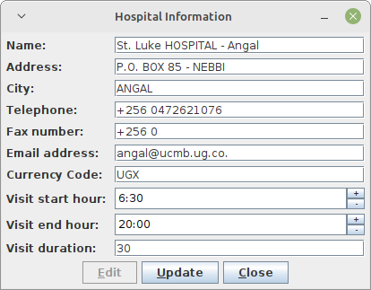
By pressing the Update button, the new information is stored in the system and is reflected throughout the entire application; for example, in the reports heading (see Statistics in this document).
12.4 Ward (Ward)
Once the Ward button in the Settings menu is pressed, the Ward Browser window is shown:
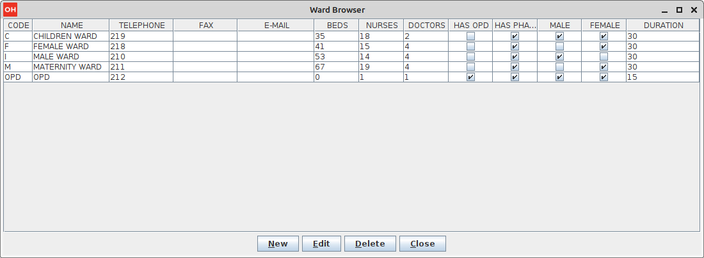
The functions available in this window are:
-
New: enter a new ward (cannot use an existing code).
-
Edit: edit an existing ward (the code cannot be changed).
-
Delete: delete an existing ward (cannot be deleted if still used somewhere in the application).
-
Close: close the window.
By pressing the New button the New Ward window is shown:
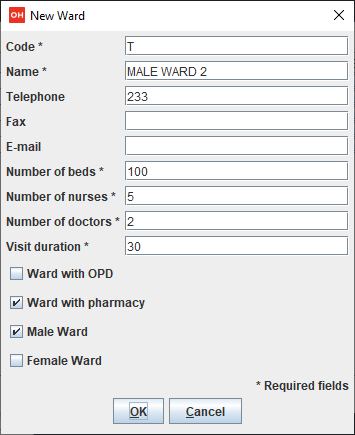
To insert a new ward, provide the following required inputs:
-
Code: the ward code (it must be unique)
-
Name: the name of the ward
-
Number of beds: the value is shown in the admission module to check for available beds; 0 zero beds wards will be not shown in the admission module
-
Number of nurses: it may be shown in some reports (0 zero is allowed)
-
Number of doctors: it may be shown in some reports (0 zero is allowed)
-
Visit duration: length of a visit (in minutes and must be greater than zero)
-
Ward with OPD: if checked, it means that the ward will also be available in the OPD Extended mode
-
Ward with pharmacy: it is used in Pharmaceuticals Stock; if checked, it means that the ward can be a destination for discharging movements, otherwise it will be not shown in the list
-
Male Ward: if it is a male Ward
-
Female Ward: if it is a female Ward
| Maternity (M) and OPD (OPD) wards are built-in wards and cannot be deleted, although they can be modified as needed. |
The wards defined here are used throughout the entire application. See for example, the Admission module, Pharmaceuticals Stock and Pharmaceuticals Stock Ward (see Admission/Patient, Pharmaceutical Stock and Pharmaceuticals Stock Ward in this document).
12.5 Disease (Disease)
Once the Disease button in the Settings menu is pressed, the Diseases Browser window is shown:
The functions available in this window are:
-
Selected Type: filter the list by selecting only one Disease Type.
-
New: enter a new disease (cannot use an existing code).
-
Edit: edit an existing disease (the code cannot be changed).
-
Delete: delete an existing disease (it is set as not present in OPD or in IPD).
-
Close: close the window.
By pressing the Edit button, the Edit Disease window is shown:
In editing mode, the code cannot be changed and the only modifications allowed are to the Type, the Description and if the disease should appear only in OPD, or Admissions, or in both.
By removing the check from all the checkboxes (OPD, IPD -IN-, and IPD -OUT-) a Delete action is performed disabling the disease from appearing in the application. This action can be undone by editing the disease again.
The diseases defined are reflected throughout the entire application, like in the Admission module and the OPD module (see Admission/Patient and Outpatient Department Management in this document).
12.6 Exam (Exams)
Once the Exams button in the Settings menu is pressed, the Exam Browser window is shown:
The functions available in this window are:
-
Search: subset the list by typing a keyword.
-
Select Type: subset the list by selecting only one Exam Type.
-
New: enter a new exam (cannot use an existing code).
-
Edit: edit an existing exam (the code cannot be changed).
-
Delete: delete an existing exam (it is set as not present in OPD or in IPD).
-
Results: define possible results for the selected exam.
-
Close: close the window.
By pressing the Edit button, the Edit Exam window is shown:
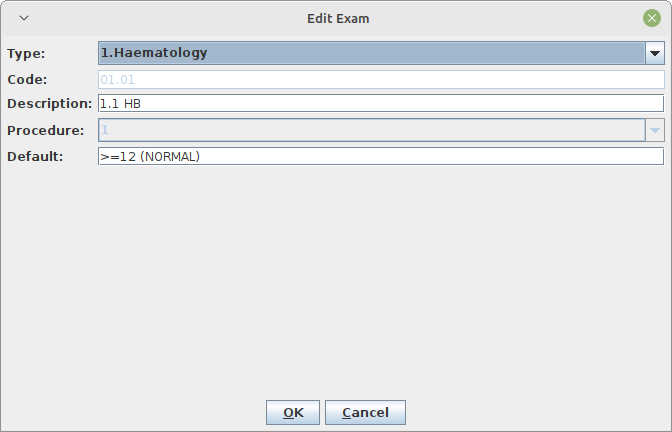
In editing mode, the code or procedure cannot be changed and the only modifications allowed are to the Type, the Description and the default value.
By pressing the New button, the New Exam window is shown:
To insert a new Exam the following data must be provided:
-
Type: the Exam Type (see Exam Types in this document).
-
Code: a unique code; a warning window will appear if not unique.
-
Description: the exam name.
-
Procedure: the kind of results for this exam (see Results in this document).
-
Default: a default value among the results that are going to be defined (see Results in this document).
12.6.1 Results (Results)
Once an exam is defined, the next step is the definition of the set of results the exam can have. First, select the exam in the Exam Browser window and then press the Results button.
In Open Hospital three kinds of results can be defined, called Procedure:
-
Procedure 1: a set of values as description; only one will be selectable as exam Single Result
-
Procedure 2: a set of Positive/Negative values; all of them will figure as exam Multiple Results
-
Procedure 3: a specific value to be input manually; it will show an input field at the time of the exam registration
The difference between Procedures (1, 2, 3) can be seen in the Laboratory module (see Create a new laboratory exam and Laboratory Multiple Insert in this document).
Because for Procedure 3 the exact value is not known, the Result button is disabled in this case:
The two remaining possibilities are shown below:

The functions available in both windows are:
-
New: enter a new result.
-
Delete: delete a defined result.
-
Close: close the window.
12.7 Operations (Operation)
Once the Operation button in the Settings menu is pressed, the Operations Browser window is shown:
The functions available in this window are:
-
Selected type: filter the list by selecting only one Operation Type.
-
New: enter a new operation (cannot use an existing code).
-
Edit: edit an existing operation (the code cannot be changed).
-
Delete: delete an existing operation (it is set as not present in OPD or in IPD).
-
Close: close the window.
By pressing the Edit button, the Edit Operation window is shown:
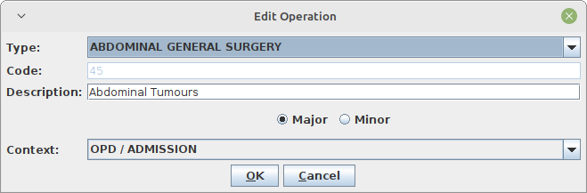
In editing mode, the code cannot be changed but only modification of the Type, the Description and whether the operation concerns Major or Minor surgery for statistical purposes (not yet implemented) are allowed.
You can also change the operation’s context: OPD / ADMISSION, ADMISSION, OPD.
The Operations defined are used throughout the entire application, like in the Admission module (see Insert or Modify Surgery data in this document).
12.8 Vaccine (Vaccine)
Once the Vaccine button in the Settings menu is pressed, the Vaccine Browser window as shown below:

The functions available in this window are:
-
Selected type: filter the list by selecting only one Vaccine Type.
-
New: enter a new vaccine (cannot use an existing code).
-
Edit: edit an existing vaccine (the code cannot be changed).
-
Delete: delete an existing vaccine (it is set as not present in OPD or in IPD).
-
Close: close the window.
By pressing the Edit button, the Edit Vaccine window is shown:
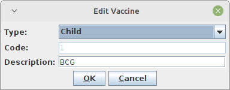
In editing mode, the code cannot be changed; only modification of the Type and the Description is permitted.
The vaccines defined are used throughout the entire application, like in the Vaccine module (see Vaccines in this document).
12.9 Prices (Price Lists)
Once the Price Lists button in the Settings menu is pressed, the Price Browser window is shown:
The functions available in this window are:
-
Save: save any modifications made to the price list.
-
Printing: print the current price list.
-
Cancel: close the window.
-
Switch price list: focus on a different price list by selecting it in the upper-left corner of the window.
-
Manage Lists: define how many and which price list will be available in the application (see Price Lists in this document).
The Price Browser window shows the list of all prices in the selected price lists; the system automatically creates a price for every exam (see Exam), operation (see Operations) and medical (see Pharmaceuticals) defined in the system, plus other prices defined in Other Prices module (see Other Prices).
To modify a price just double-click on it and type the new price.
| If a price has been defined as undefined (see Other Prices) it will appear as 0 (zero) and cannot be modified. |
| Exams', operations' and medicals' prices are automatically created as OPD, IPD, not daily, not undefined, and not discharge; see Other Prices for more information. |
When all the modifications are made the changes can be stored permanently in the system by pressing the Save button. A confirmation message reports the success of the operation:
12.9.1 Price Lists (Manage Lists)
Once the Manage Lists button in the Price Browser window is pressed, the List Browser window is shown:

The functions available in this window are:
-
New: enter a new price list.
-
Copy: create a new price list as a copy of another one.
-
Edit: edit an existing price list.
-
Delete: delete an existing price list.
-
Close: close the window.
After selecting a list to copy, press the Copy button and the system prompts with a series of windows asking:
-
a Name of the new price list
-
a Multiplier for all prices in the selected price list
-
a Rounding Factor for all prices in the new price list
A confirmation message reports the success of the operation:
By default, the new list is created with the following information:
ID: aCode
NAME: the same name provided in the step by step copying procedure
DESCRIPTION: a Description
CURRENCY: the currency of the selected price list
Once the copy has been created the information can be changed by editing the price list just created.
By pressing the Edit button, the Edit List window is shown:
In editing mode, any of the data related to the list can be changed.
The lists defined are used in the Accounting module (see Insert a new bill in this document).
12.10 Supplier (Supplier)
Once the Supplier button in the Settings menu is pressed, the Supplier Browser window is shown:
The functions available in this window are:
-
New: insert a new supplier.
-
Edit: edit an existing supplier.
-
Delete: delete a supplier.
-
Close: close the window.
The Supplier Browser window shows the list of all the suppliers in the system.
To add a supplier, click the New button to access the New Supplier window as shown below:
The information associated with a new supplier is:
-
Name: is the supplier’s name (it is the only required field).
-
Address: is the supplier’s address.
-
Tax Number ID: is the supplier’s tax number.
-
Telephone: is the supplier’s phone number.
-
Fax number: is the supplier’s FAX number.
-
E-mail: is the supplier’s email address.
-
Note: Additional notes about the supplier.
When the data is entered, click the OK button to save the new supplier.
To edit the supplier’s information, in the Supplier Browser highlight the supplier and click on the Edit button to open the Edit Supplier window. After performing the necessary modifications, click the OK button to save the changes.
To delete a supplier, in the Supplier Browser highlight the supplier and click on the Delete button to remove the selected Supplier.
12.11 SMS Manager (SMS Manager)
| SMS pricing is set and collected by the SMS Provider (GSM or HTTP) and is related to or controlled by this software. |
| Sending SMS in Open Hospital requires that the Gateway is well configured. Either a GSM gateway or WebApi Gateway can be used. Ask the Administrator about enabling this function or refer to the Administrators Guide. |
Once the SMS Manager button in the Settings menu is pressed, the SMS Manager window is shown:
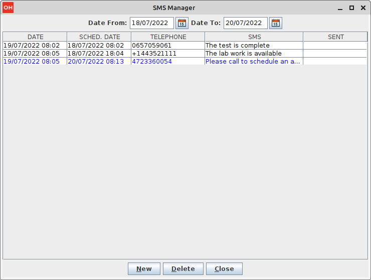
The functions available in this window are:
-
New: send a new SMS.
-
Delete: delete an SMS.
-
Close: close the window.
It is also possible to filter the SMS list by a date range.
To send a new SMS, click the New button to access the New SMS window:
In order to insert a new SMS, the following data is required:
-
Scheduled Date: use this field to send an SMS in the future. Use the current date and time to send the SMS immediately.
-
Number: the recipient of the SMS. You can select a patient by clicking the button . The phone number of the selected patient is automatically inserted.
-
SMS: type the text of the SMS in the white space (maximum of 160 characters).
Then click OK to save the new SMS. If the scheduled date and time are now, the SMS is sent immediately.
To delete an SMS, highlight the SMS and click the Delete button to delete the SMS.
12.12 Users & Groups (Users & Groups)
The User Menu can be enabled or disabled by changing the SINGLEUSER flag in the configuration file. Ask the Administrator to enable/disable this function or refer to the Administrators Guide.
If SINGLEUSER is set to NO the following login window is shown when the program starts:
Once successfully logged into the system, if enabled by the Administrator, the Users & Groups button in the Settings submenu is available.
Once the Users & Groups button in the Settings submenu is pressed, the Users & Groups submenu is shown:
Open Hospital allows the management of users organized into groups; each group is characterized by different permissions assigned by the Administrator.
Before registering a new user in the system, ensure that there is a group defined with the related permissions to which the user should have access.
12.12.1 Groups (Groups)
Once the Groups button in the Users submenu is pressed, the Groups Browser window is shown:
The functions available in this window are:
-
Edit: edit an existing group (only the description can be changed).
-
New: enter a new group.
-
GroupMenu: define rights and permission for a selected group.
-
Delete: delete an existing group.
-
Close: close the window.
By pressing the GroupMenu button, the Menu Item Browser window is shown:
The window shows the full set of functions available in Open Hospital in a tree format:
-
main is the trunk: the main menu
-
Blue nodes are the branches: menus and windows
-
Black nodes are the leaves: buttons and functions
Double-clicking on each branch or leaf enables or disables that function or set of functions for the selected group.
For instance, the group Registration Office and the group Cashiers may have the following group permission configurations:
So, the Registration Office group can only use the Admission/Patient module to insert and edit patients, while the Cashiers group can only use the Accounting module to produce bills.
So, the main menu for each user registered in the Registration Office group and for each one in the Cashiers group is shown as follows:
12.12.2 Users (Users)
Once the Users button in the Users & Groups submenu is pressed, the User Browser window is shown:
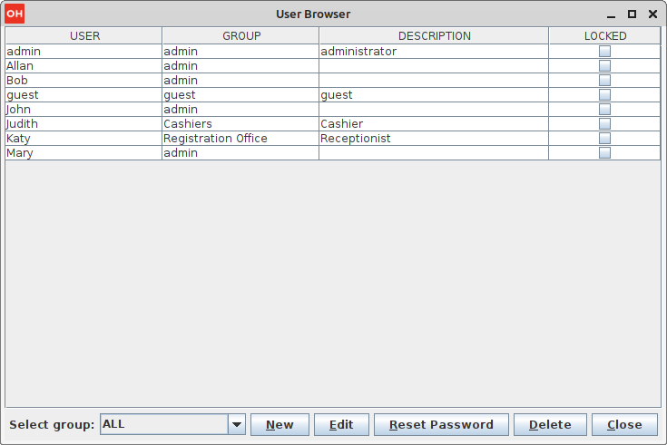
The functions available in this window are:
-
Selected group: filter the list by selecting only one group.
-
New: enter a new user (cannot use the same name).
-
Edit: edit an existing user (the password cannot be changed).
-
Reset Password: change the password for an existing user.
-
Delete: delete an existing user.
-
Close: close the window.
By pressing the Edit button, the Edit User window is shown:
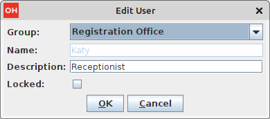
In editing mode, only the group and the description can be modified.
13 Worksheet (Worksheet)
The Worksheet function allows the management and printing of the list of appointments scheduled.
The Worksheet module works at the Ward (Department) level therefore a ward must first be selected:
Once selected, the ward (it is possible to switch to another ward at any time), a two-column appointment schedule is shown with the appointments/services scheduled for today (on the left) and tomorrow (on the right):
Another date can be selected with the Go to date field or reset the schedule back to today with the button Today. In all cases, the window always shows the chosen date on the left and the following day on the right.
The functions available in this window are:
-
Add Visit: schedule a new visit for a specific date (on the left or on the right).
-
Remove Visit: remove a visit for a specific date (on the left or on the right).
-
Print this day’s visits: print the specific date scheduled visits.
-
Next→: see the schedule for the following day.
-
←Prev.: see the schedule for the previous day.
-
Close: close the window.
| To schedule a visit can also be done in the Therapy Management module, see Therapy Management |
14 License
 Informatici Senza Frontiere Onlus, 2022
Informatici Senza Frontiere Onlus, 2022
User’s Guide, © 2022 by Informatici Senza Frontiere Onlus
Policies is made available under a Creative Commons Attribution-ShareAlike 4.0 International License: http://creativecommons.org/licenses/by-sa/4.0/.